การปรับใช้#
ภาพรวมการปรับใช้#
Backend.AI ให้คุณปรับใช้โมเดล AI เป็นบริการ inference ผ่านฟีเจอร์ การปรับใช้ (Deployments) การปรับใช้แต่ละรายการจะเปิดให้โมเดลเข้าถึงได้ผ่าน URL ของ endpoint ที่เสถียร ซึ่งแอปพลิเคชันของผู้ใช้ปลายทาง (เช่น แอปมือถือ, backend ของเว็บเซอร์วิส, เครื่องมือภายในองค์กร) สามารถเรียกใช้งานเพื่อทำ inference ได้

การปรับใช้ขยายความสามารถของเซสชันการคำนวณทั่วไปด้วยการบำรุงรักษาแบบอัตโนมัติ การปรับขนาดของ replica และที่อยู่ endpoint ถาวรซึ่งไม่เปลี่ยนแปลงไม่ว่ามีการเพิ่มหรือลด replica อย่างไรก็ตาม คุณเพียงระบุพารามิเตอร์การปรับขนาดที่ต้องการเท่านั้น Backend.AI จะสร้าง ตรวจสอบ และยุติเซสชัน inference เบื้องหลังให้โดยอัตโนมัติ คุณจึงไม่ต้องจัดการเซสชันเหล่านั้นด้วยตนเอง
หน้าการปรับใช้#
หน้าการปรับใช้แสดงรายการการปรับใช้ทั้งหมดในโปรเจกต์ปัจจุบัน คุณสามารถเข้าถึงได้โดยคลิก การปรับใช้ ในเมนูด้านข้าง
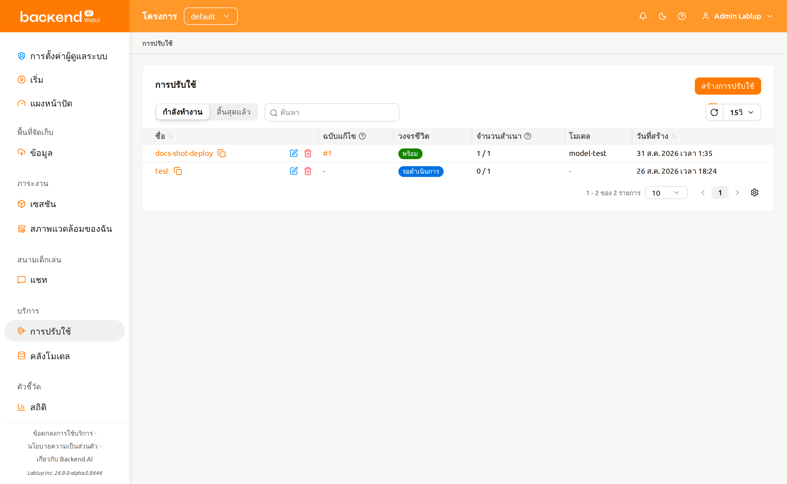
ที่ด้านบนของหน้า คุณสามารถกรองการปรับใช้ตามขั้นตอนวงจรชีวิต:
- กำลังทำงาน: แสดงการปรับใช้ที่กำลังทำงานหรือกำลังสร้าง นี่คือมุมมองเริ่มต้น
- สิ้นสุดแล้ว: แสดงการปรับใช้ที่ถูกยุติแล้ว
คลิกปุ่ม สร้างการปรับใช้ เพื่อเปิดหน้าต่าง สร้างการปรับใช้
การสร้างการปรับใช้#
การสร้างการปรับใช้แบ่งเป็นสองขั้นตอน
- สร้างการปรับใช้ (deployment) — คอนเทนเนอร์น้ำหนักเบาที่กำหนดเฉพาะข้อมูลระบุตัวตนของการปรับใช้ (ชื่อ การมองเห็น เมตาดาตาของการปรับใช้ และ resource group)
- เพิ่ม Revision — snapshot ของการกำหนดค่าที่ระบุสิ่งที่จะรันจริง (start command, environment variables, runtime variant, image, ทรัพยากร และ model storage)
แต่ละการปรับใช้สามารถมี Revision ได้หลายรายการ แต่ในแต่ละช่วงเวลาจะมี Revision ปัจจุบัน (Revision ที่ให้บริการ traffic) เพียงรายการเดียว และคุณสามารถสลับระหว่าง Revision ได้จากแท็บ Revisions ในหน้าข้อมูลรายละเอียดการปรับใช้
หน้าต่างสร้างการปรับใช้#
ในหน้าการปรับใช้ ให้คลิกปุ่ม สร้างการปรับใช้ เพื่อเปิดหน้าต่าง สร้างการปรับใช้ หน้าต่างนี้รับเฉพาะเมตาดาตาระดับการปรับใช้เท่านั้น และจะยังไม่มีการสร้าง Revision ในขั้นตอนนี้
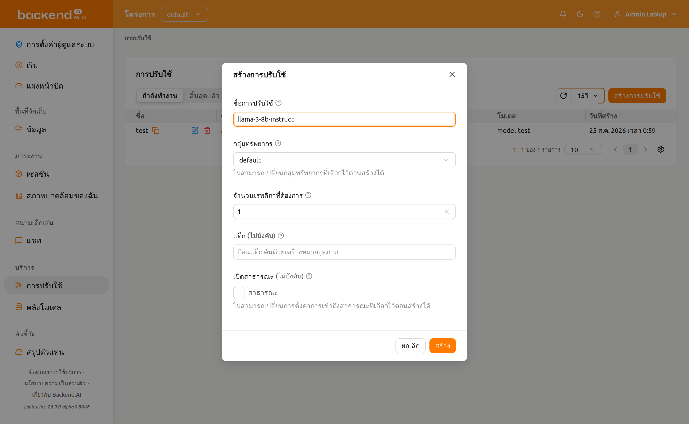
หน้าต่างประกอบด้วยฟิลด์ต่อไปนี้
- ชื่อการปรับใช้ (Deployment Name): ชื่อที่ไม่ซ้ำกันที่ใช้ระบุการปรับใช้ทั้งใน dashboard, API และ URL ของ endpoint
- กลุ่มทรัพยากร (Resource Group): กลุ่มทรัพยากรที่การปรับใช้จะทำงาน หากโปรเจกต์ของคุณมี resource group เพียงกลุ่มเดียว ระบบจะเลือกให้โดยอัตโนมัติและสามารถดำเนินการต่อได้โดยไม่ต้องเลือกเอง
- จำนวนเรพลิกาที่ต้องการ (Desired Replicas): จำนวนเรพลิกาที่ต้องคงไว้ให้ทำงานสำหรับการปรับใช้นี้ ระบบจะปรับขนาดพูลที่ใช้งานอยู่ไปยังเป้าหมายนี้
- แท็ก (Tags): ป้ายกำกับที่ไม่บังคับสำหรับจัดระเบียบและกรองการปรับใช้ กด Enter หรือจุลภาคเพื่อเพิ่ม
- เปิดสาธารณะ (Open to Public): เมื่อเปิดใช้งาน endpoint จะสามารถเข้าถึงได้โดยไม่ต้องใช้ access token เมื่อปิดใช้งาน ทุกคำขอจะต้องแนบ token ดูรายละเอียดที่ การสร้างโทเค็น
ตั้งแต่เปิดหน้าต่างขึ้นมา จะมีคำเตือนแสดงอยู่ใต้ฟิลด์ กลุ่มทรัพยากร ว่า "ไม่สามารถเปลี่ยนกลุ่มทรัพยากรที่เลือกไว้ตอนสร้างได้" และใต้ฟิลด์ เปิดสาธารณะ ว่า "ไม่สามารถเปลี่ยนการตั้งค่าการเข้าถึงสาธารณะที่เลือกไว้ตอนสร้างได้"
กลุ่มทรัพยากรเป็นสมบัติของการปรับใช้ ไม่ใช่ของ Revision คุณจึงไม่สามารถย้ายการปรับใช้ไปยังกลุ่มทรัพยากรอื่นในภายหลังได้ ไม่ว่าจะด้วยการแก้ไขการปรับใช้หรือการเพิ่ม Revision ใหม่ เปิดสาธารณะ ก็ถูกกำหนดตายตัวในลักษณะเดียวกัน โดยในหน้าต่าง แก้ไขการปรับใช้ ช่องทำเครื่องหมายนี้จะเป็นแบบอ่านอย่างเดียว และมีคำเตือนเดียวกันแสดงอยู่ด้านล่าง กรุณาเลือกค่าทั้งสองให้ถูกต้องก่อนสร้าง หากต้องการค่าอื่น ให้สร้างการปรับใช้ใหม่
คลิก สร้าง เพื่อสร้างการปรับใช้ จากนั้นคุณจะถูกพาไปยังหน้าข้อมูลรายละเอียดการปรับใช้ และจะเห็นคำเตือน ไม่มีการปรับใช้รุ่นแก้ไข จนกว่าคุณจะเพิ่ม Revision แรก
หากต้องการเปลี่ยนการตั้งค่าระดับการปรับใช้ (ชื่อ, จำนวนเรพลิกาที่ต้องการ, หรือแท็ก) หลังจากสร้างแล้ว ให้คลิกปุ่ม แก้ไข บนการ์ดข้อมูลบริการ จากนั้นแก้ไขค่าต่าง ๆ ในหน้าต่าง แก้ไขการปรับใช้ แล้วบันทึกการเปลี่ยนแปลง กลุ่มทรัพยากรและการตั้งค่า เปิดสาธารณะ ไม่สามารถเปลี่ยนแปลงได้ที่นี่ เนื่องจากถูกกำหนดตายตัวตั้งแต่ตอนสร้างตามที่อธิบายไว้ข้างต้น
การเพิ่ม Revision#
Revision รวบรวมการตั้งค่าที่จำเป็นทั้งหมดสำหรับการรัน inference server ได้แก่ image, start command, ทรัพยากร, การ mount โมเดล และ environment variables จากหน้าข้อมูลรายละเอียดการปรับใช้ ให้คลิก เพิ่ม Revision เพื่อเปิดหน้าต่าง
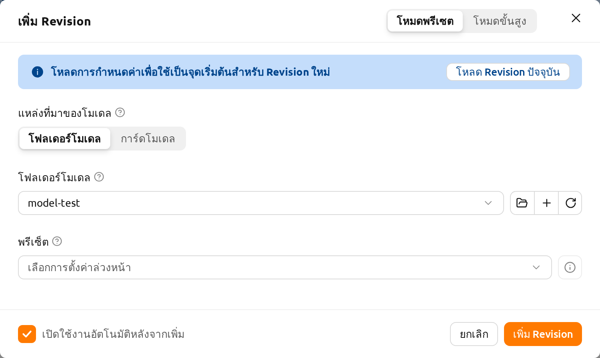
ใช้ตัวสลับ โหมดพรีเซต / โหมดขั้นสูง ในส่วนหัวของหน้าต่างเพื่อเลือกวิธีกำหนดค่า Revision
เมื่อการปรับใช้มี Revision ปัจจุบันอยู่แล้ว จะมีแบนเนอร์ โหลด Revision ปัจจุบัน แสดงอยู่เหนือฟอร์มในทั้งสองโหมด คลิก โหลด Revision ปัจจุบัน เพื่อกรอกข้อมูลในฟอร์มล่วงหน้าด้วยการกำหนดค่าของ Revision ปัจจุบันเป็นจุดเริ่มต้น (หน้าต่างจะสลับไปยังโหมดขั้นสูงโดยอัตโนมัติหากจำเป็น) แบนเนอร์นี้จะไม่แสดงเมื่อการปรับใช้ยังไม่มี Revision ปัจจุบัน และจะหายไปเมื่อคุณโหลดการกำหนดค่าแล้ว
โหมดพรีเซต#
เพิ่ม Revision อย่างรวดเร็วโดยใช้ deployment preset ที่กำหนดไว้ล่วงหน้า
- แหล่งที่มาของโมเดล: เลือกว่าโมเดลของ Revision นี้มาจากที่ใด ระหว่าง โฟลเดอร์โมเดล หรือ การ์ดโมเดล ตัวเลือกด้านล่างจะเปลี่ยนไปตามที่คุณเลือก และการสลับแหล่งที่มาจะล้างการเลือกโมเดลและ preset ที่เลือกไว้ก่อนหน้า
- โฟลเดอร์โมเดล (แหล่งที่มาแบบโฟลเดอร์โมเดล): โฟลเดอร์จัดเก็บที่จะเมาต์ในแต่ละ replica
- การ์ดโมเดล (แหล่งที่มาแบบการ์ดโมเดล): การ์ดโมเดลที่จะปรับใช้ โฟลเดอร์โมเดลที่รองรับการ์ดนั้นจะถูกเมาต์ในแต่ละ replica และจะแสดงเฉพาะ preset ที่เข้ากันได้กับการ์ดนั้นเท่านั้น คลิกปุ่ม ⓘ ข้างตัวเลือกเพื่อเปิดลิ้นชัก รายละเอียดการ์ดโมเดล ของการ์ดที่เลือก
- พรีเซ็ต: deployment preset ที่เข้ากันได้กับ resource group ของการปรับใช้ คลิกปุ่ม ⓘ ข้างตัวเลือกเพื่อดูรายละเอียดของ preset เมื่อใช้แหล่งที่มาแบบ การ์ดโมเดล ตัวเลือกนี้จะถูกปิดใช้งานพร้อมคำแนะนำ "โปรดเลือกการ์ดโมเดลก่อน" จนกว่าคุณจะเลือกการ์ด
หากการ์ดโมเดลที่เลือกไม่มีโฟลเดอร์โมเดลสำหรับเมานต์ ระบบจะไม่สร้าง Revision และจะแสดงข้อความแสดงข้อผิดพลาด "แหล่งที่มาของโมเดลที่เลือกไม่มีโฟลเดอร์โมเดลสำหรับเมานต์ โปรดเลือกโมเดลการ์ดหรือโฟลเดอร์โมเดลอื่น" ให้เลือกการ์ดโมเดลอื่น หรือสลับแหล่งที่มากลับไปเป็น โฟลเดอร์โมเดล
หากไม่มี preset ที่ใช้ได้กับ resource group ของการปรับใช้ ระบบจะแสดงข้อความแนะนำแทน ให้สลับไปยังโหมดขั้นสูงเพื่อกำหนดค่า Revision ด้วยตนเอง
โหมดขั้นสูง#
กำหนดค่าทุกการตั้งค่าของ Revision โดยตรง
ฟอร์มประกอบด้วยส่วนต่อไปนี้
- โมเดลและ Runtime: เลือกโฟลเดอร์โมเดล ปลายทางการเมาต์ และ runtime variant สำหรับ variant
vLLM/SGLangจะแสดงแผง Runtime Parameters ส่วน variantCustomจะแสดงส่วนการกำหนดค่าบริการ ดูรายละเอียดฟิลด์เฉพาะ runtime ได้ที่ส่วนด้านล่าง - การตรวจสอบสุขภาพ และ การกระทำก่อนเริ่ม: กำหนดค่าการตรวจสอบสุขภาพและการกระทำที่จะรันก่อนเริ่ม inference server ทั้งสองส่วนใช้ได้กับทุก runtime variant
- สภาพแวดล้อม: เลือก container image (สภาพแวดล้อม / เวอร์ชัน) และเพิ่ม environment variables
- คลัสเตอร์และทรัพยากร: จัดสรรทรัพยากร CPU, memory และ accelerator
- การตั้งค่าขั้นสูง (ย่อ/ขยายได้): กำหนดเส้นทางไฟล์กำหนดโมเดล และเมาต์โฟลเดอร์จัดเก็บเพิ่มเติมนอกเหนือจากโฟลเดอร์โมเดล
ที่ด้านล่างของหน้าต่าง ให้เลือก เปิดใช้งานอัตโนมัติหลังจากเพิ่ม เพื่อเปิดใช้งาน Revision ทันทีหลังจากสร้าง หากไม่ได้เลือก Revision จะถูกบันทึกในสถานะไม่ได้ใช้งาน และคุณสามารถนำมาใช้ภายหลังได้จากแท็บ Revisions
ฟิลด์อ้างอิง Revision: Add Revision#
ส่วนย่อยด้านล่างนี้อธิบายฟิลด์ระดับ Revision อย่างละเอียด ซึ่งใช้ได้ทั้งเมื่อเพิ่ม Revision ด้วยตนเองใน โหมดขั้นสูง และเมื่อต้องการทำความเข้าใจว่าแต่ละฟิลด์ควบคุมอะไร
การเมาต์โฟลเดอร์โมเดล#
ทุก Revision จะเมาต์โฟลเดอร์จัดเก็บโมเดลหนึ่งโฟลเดอร์ลงในแต่ละเรพลิกา ฟิลด์ที่อยู่ใต้ตัวเลือกโฟลเดอร์จะกำหนดว่าโฟลเดอร์นั้นจะปรากฏที่ตำแหน่งใดภายในคอนเทนเนอร์
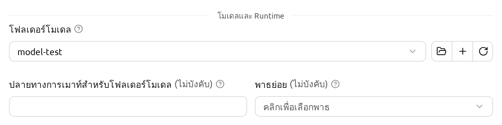
- โฟลเดอร์โมเดล: โฟลเดอร์จัดเก็บโมเดลที่จะเมาต์ในแต่ละเรพลิกา
- ปลายทางการเมาท์สำหรับโฟลเดอร์โมเดล: เส้นทางภายในคอนเทนเนอร์ที่โฟลเดอร์จัดเก็บโมเดลถูกเมาต์ (ค่าเริ่มต้น:
/models) - พาธย่อย: โฟลเดอร์ย่อยภายในโฟลเดอร์โมเดลที่จะเมาต์แทนรากของโฟลเดอร์ เว้นว่างไว้เพื่อเมาต์รากของโฟลเดอร์
การกำหนดค่าบริการ (เฉพาะ Custom Runtime)#
runtime variant ที่อ่านการตั้งค่าจากโฟลเดอร์โมเดล เช่น variant Custom จะแสดงส่วน การกำหนดค่าบริการ ใต้ตัวเลือก Runtime ส่วนนี้จะขยายไว้เป็นค่าเริ่มต้น และใช้กำหนดวิธีเริ่มต้นกระบวนการของ inference server
- การรันคำสั่ง: วิธีการรันคำสั่ง
- Shell: รันคำสั่งผ่าน shell (
bash -c "...") จึงสามารถใช้ shell operator ได้ แนะนำสำหรับกรณีทั่วไป - Exec: รันคำสั่งโดยตรงในรูปแบบอาร์กิวเมนต์ โดยไม่ผ่าน shell ใช้ตัวเลือกนี้เฉพาะเมื่อจำเป็นต้องรันคำสั่งโดยไม่มี shell เช่น อิมเมจที่ไม่มีไบนารีของ shell
- Shell: รันคำสั่งผ่าน shell (
- Shell: ไบนารีของ shell ที่ใช้รันคำสั่ง (เช่น
/bin/bash) จะแสดงและจำเป็นต้องกรอกเฉพาะในโหมด Shell ไบนารีนี้ต้องมีอยู่ในคอนเทนเนอร์อิมเมจ มิฉะนั้นบริการจะเริ่มต้นไม่สำเร็จ - คำสั่ง: คำสั่งสำหรับเปิดใช้งาน inference server เช่น
python -m http.server 8000ในโหมด Shell ฟิลด์นี้เป็นกล่องข้อความหลายบรรทัด ส่วนในโหมด Exec จะเปลี่ยนชื่อเป็น คำสั่ง (argv) และเป็นช่องกรอกบรรทัดเดียว - พอร์ต: พอร์ตคอนเทนเนอร์ที่ inference server รับฟัง (2–65535)
ในโหมด Shell คำสั่งจะถูกส่งต่อให้ shell ดังนั้น operator เช่น ;, |, &&, $VAR และการเปลี่ยนทิศทาง (redirection) จะถูกตีความเหมือนที่ใช้ในเทอร์มินัล:
chmod +x /setup.sh; vllm serve /modelsในโหมด Exec ข้อความเดียวกันจะถูกแยกเป็นอาร์กิวเมนต์และรันโดยตรง operator เหล่านั้นจึงถูกส่งผ่านเป็นข้อความธรรมดา ให้คั่นอาร์กิวเมนต์ด้วยช่องว่าง และใส่เครื่องหมายคำพูดสำหรับอาร์กิวเมนต์ที่มีช่องว่าง เช่น --name "my model" หากคุณต้องใช้ไวยากรณ์ของ shell ให้เปลี่ยน การรันคำสั่ง กลับเป็น Shell แทนการครอบคำสั่งด้วย /bin/bash -c "..." เอง
การตรวจสอบสุขภาพและการกระทำก่อนเริ่ม#
ฟิลด์ เปิดใช้การตรวจสอบสุขภาพ และ การกระทำก่อนเริ่ม อยู่ถัดจากส่วนการกำหนดค่าบริการ และแสดงสำหรับทุก runtime variant
- เปิดใช้การตรวจสอบสุขภาพ: เมื่อเปิดใช้งาน ระบบจะส่งคำขอ HTTP ไปยัง inference server เป็นระยะเพื่อตรวจสอบว่าตอบสนองอย่างถูกต้อง เมื่อปิดใช้งาน (ค่าเริ่มต้นสำหรับ Revision ใหม่) ระบบจะไม่มีการตรวจสอบสุขภาพและ replica ที่ไม่แข็งแรงจะไม่ถูกตรวจพบโดยอัตโนมัติ ควรเปิดใช้งานสำหรับ deployment ที่ใช้งานจริง เมื่อเลือก เปิดใช้การตรวจสอบสุขภาพ จะมีฟิลด์เพิ่มเติมดังนี้:
- เส้นทาง: เส้นทาง HTTP endpoint ที่เรียกใช้ระหว่างการตรวจสอบสุขภาพของบริการ (ค่าเริ่มต้น:
/health) - ช่วงเวลา: ช่วงเวลาระหว่างการตรวจสอบแต่ละครั้ง (วินาที)
- จำนวนลองใหม่สูงสุด: จำนวนความล้มเหลวต่อเนื่องสูงสุดก่อนที่เรพลิกาจะถูกทำเครื่องหมายเป็น
UNHEALTHY - เวลารอสูงสุด: หมดเวลาสำหรับคำขอตรวจสอบสุขภาพแต่ละครั้ง (วินาที)
- รหัสสถานะ: รหัสสถานะ HTTP ที่ระบุว่าบริการทำงานปกติ
- ระยะผ่อนผันการเริ่มต้น: ระยะเวลาผ่อนผันหลังคอนเทนเนอร์เริ่มทำงาน (วินาที) ซึ่งยอมให้การตรวจสอบสุขภาพล้มเหลวได้ เรพลิกาจะทำงานเมื่อตรวจสอบสำเร็จครั้งแรก ควรเพิ่มค่านี้สำหรับโมเดลขนาดใหญ่ที่ใช้เวลาโหลดนาน
- เส้นทาง: เส้นทาง HTTP endpoint ที่เรียกใช้ระหว่างการตรวจสอบสุขภาพของบริการ (ค่าเริ่มต้น:
- การกระทำก่อนเริ่ม: การกระทำที่จะรันก่อนเริ่มบริการโมเดล คลิก เพิ่มการกระทำก่อนเริ่ม เพื่อเพิ่มแถว จากนั้นกรอก การกระทำ (ชื่อของการกระทำ เช่น
wait_for_file) และ อาร์กิวเมนต์ (JSON) (อาร์กิวเมนต์ในรูปแบบอ็อบเจกต์ JSON เช่น{}) ทั้งสองฟิลด์จำเป็นต้องกรอกในทุกแถว และอาร์กิวเมนต์ต้องเป็น JSON ที่ถูกต้อง ดูรายการการกระทำที่รองรับได้ที่ คำอธิบายการกระทำของบริการที่รองรับใน Backend.AI Model Serving
เส้นทางของไฟล์กำหนดโมเดลอยู่ในแผง การตั้งค่าขั้นสูง ที่ด้านล่างของฟอร์ม สำหรับคำแนะนำในการสร้างไฟล์ดังกล่าว ดูที่ การสร้างไฟล์กำหนดโมเดล
พารามิเตอร์ Runtime (vLLM / SGLang)#
เมื่อคุณเลือก runtime variant vLLM หรือ SGLang ส่วน พารามิเตอร์ Runtime จะปรากฏขึ้นแทนส่วนการกำหนดค่าบริการ ส่วนนี้ช่วยให้คุณกำหนดค่า serving framework โดยไม่ต้องแก้ไขไฟล์การกำหนดค่าด้วยตนเอง
พารามิเตอร์ถูกจัดเป็นหมวดหมู่ที่แยกตามแท็บ รายการแท็บที่มีจะแตกต่างกันตาม runtime variant
พารามิเตอร์ที่ไม่เปลี่ยนแปลงจะใช้ค่าเริ่มต้นของ runtime
ผู้ดูแลระบบสามารถกำหนดให้พารามิเตอร์แต่ละตัวเป็นแบบจำเป็น พารามิเตอร์ที่จำเป็นจะแสดงด้วยเครื่องหมายดอกจัน (★) สีแดงถัดจากป้ายกำกับ การส่งฟอร์มโดยมีพารามิเตอร์ที่จำเป็นว่างเปล่าจะถูกปิดกั้น — ฟิลด์จะแสดงข้อผิดพลาดการตรวจสอบแม้ว่าพารามิเตอร์นั้นจะอยู่ในแท็บที่ยังไม่ได้เยี่ยมชม
เปิดใช้การตรวจสอบสุขภาพ
ฟิลด์ เปิดใช้การตรวจสอบสุขภาพ และ การกระทำก่อนเริ่ม อยู่ใต้ส่วนพารามิเตอร์ Runtime และทำงานเหมือนกับที่อธิบายไว้ใน การตรวจสอบสุขภาพและการกระทำก่อนเริ่ม โดยแสดงสำหรับ vLLM และ SGLang เช่นเดียวกับ variant Custom
พารามิเตอร์ Runtime ของ vLLM
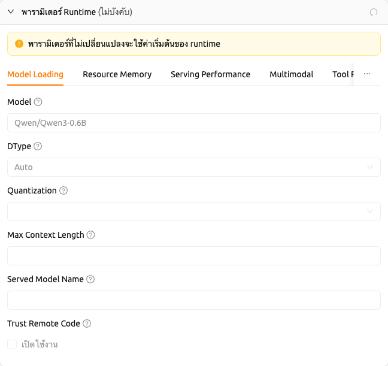
vLLM มีแท็บพารามิเตอร์ดังต่อไปนี้: Model Loading, Resource Memory, Serving Performance, Multimodal, Tool Reasoning และอื่น ๆ
ฟิลด์หลักในแท็บ Model Loading:
- Model: ชื่อหรือเส้นทางของโมเดลที่จะใช้
- DType: ประเภทข้อมูลสำหรับน้ำหนักโมเดลและการคำนวณ (เช่น
Auto,float16,bfloat16) - Quantization: วิธีการ quantization ของโมเดล (เช่น
awq,gptq,fp8) - Max Model Length: ความยาวบริบทสูงสุด (จำนวน token) ที่โมเดลสามารถประมวลผลได้
- Served Model Name: ชื่อโมเดลที่เปิดเผยบน API endpoint
- Trust Remote Code: อนุญาตให้รันโค้ดโมเดลที่กำหนดเองจากคลังโมเดล
พารามิเตอร์ Runtime ของ SGLang
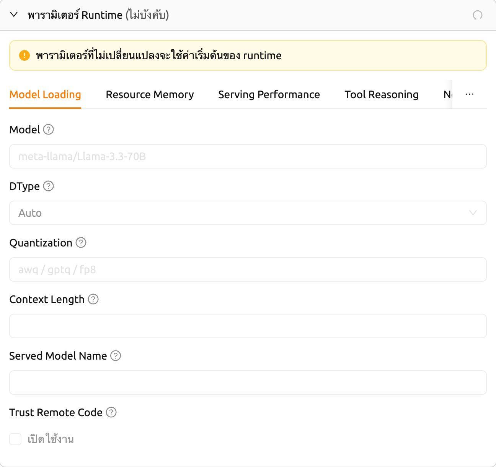
SGLang มีแท็บพารามิเตอร์ดังต่อไปนี้: Model Loading, Resource Memory, Serving Performance, Tool Reasoning และอื่น ๆ
ฟิลด์หลักในแท็บ Model Loading:
- Model: ชื่อหรือเส้นทางของโมเดลที่จะใช้
- DType: ประเภทข้อมูลสำหรับน้ำหนักโมเดลและการคำนวณ (เช่น
Auto,float16,bfloat16) - Quantization: วิธีการ quantization ของโมเดล (เช่น
awq,gptq,fp8) - Context Length: ความยาวบริบทสูงสุดที่โมเดลสามารถประมวลผลได้
- Served Model Name: ชื่อโมเดลที่เปิดเผยบน API endpoint
- Trust Remote Code: อนุญาตให้รันโค้ดโมเดลที่กำหนดเองจากคลังโมเดล
runtime variant vLLM และ SGLang จะกรอกตัวแปรสภาพแวดล้อมต่อไปนี้ล่วงหน้าในส่วน สภาพแวดล้อม:
- vLLM:
BACKEND_MODEL_NAME,VLLM_QUANTIZATION,VLLM_TP_SIZE(tensor parallelism),VLLM_PP_SIZE(pipeline parallelism),VLLM_EXTRA_ARGS(อาร์กิวเมนต์ CLI เพิ่มเติม) - SGLang:
BACKEND_MODEL_NAME,SGLANG_QUANTIZATION,SGLANG_TP_SIZE(tensor parallelism),SGLANG_PP_SIZE(pipeline parallelism),SGLANG_EXTRA_ARGS(อาร์กิวเมนต์ CLI เพิ่มเติม)
สภาพแวดล้อม#
ส่วน สภาพแวดล้อม มีอยู่สำหรับ runtime variant ทั้งหมด
- สภาพแวดล้อม / เวอร์ชัน: container image ที่ใช้สำหรับ inference server เมื่อเลือก runtime variant รายการจะถูกกรองให้เหลือเฉพาะ image ที่เข้ากันได้กับ runtime นั้น
- ชื่ออิมเมจ (กำหนดเอง): ช่องสำหรับพิมพ์ข้อมูลอ้างอิงอิมเมจโดยตรง จะแสดงเฉพาะเมื่อผู้ดูแลระบบเปิดใช้งานการป้อนชื่ออิมเมจด้วยตนเองบนเซิร์ฟเวอร์ การพิมพ์ในช่องนี้จะล้างการเลือกใน สภาพแวดล้อม / เวอร์ชัน และในทางกลับกันเช่นกัน ทั้งสองเป็นวิธีเลือกอิมเมจเดียวกันในรูปแบบที่ต่างกัน
- ตัวแปรสภาพแวดล้อม: คู่ key/value ที่จะถูกส่งให้คอนเทนเนอร์ของ inference server สำหรับ
vLLMและSGLangตัวแปรเฉพาะ runtime ที่ระบุไว้ข้างต้นจะถูกกรอกไว้ล่วงหน้า คุณสามารถเพิ่ม แก้ไข หรือลบรายการได้อย่างอิสระ เมื่อพิมพ์ชื่อตัวแปร ระบบจะแนะนำชื่อตัวแปรสภาพแวดล้อมที่ใช้บ่อย ได้แก่HF_TOKEN,WANDB_API_KEY,AWS_ACCESS_KEY_ID,AWS_SECRET_ACCESS_KEY,AWS_DEFAULT_REGION,HTTP_PROXY,HTTPS_PROXYและNO_PROXYควบคู่ไปกับตัวแปรที่ runtime variant ที่เลือกกำหนดไว้ ชื่อที่ถูกใช้ไปแล้วในแถวอื่นจะไม่แสดงในรายการ และเมื่อกำหนดชื่อที่ระบบรู้จักแล้ว ช่องค่าจะแสดงคำใบ้ที่ตรงกัน เช่น "โทเค็นการเข้าถึง Hugging Face ของคุณ" สำหรับHF_TOKEN
การป้อนชื่ออิมเมจด้วยตนเอง#
เมื่อคุณพิมพ์ใน ชื่ออิมเมจ (กำหนดเอง) แทนการเลือกจากรายการ ระบบจะนำข้อมูลอ้างอิงที่คุณป้อนไปเทียบกับอิมเมจที่ลงทะเบียนไว้บนเซิร์ฟเวอร์ในตอนที่ส่งฟอร์ม แล้วสร้าง Revision จากอิมเมจที่ตรงกัน
- ป้อนข้อมูลอ้างอิงในรูปแบบเดียวกับที่ registry ใช้ เช่น
cr.backend.ai/stable/python:3.10-ubuntu20.04 - คุณสามารถต่อท้ายด้วย
@และชื่อสถาปัตยกรรมเพื่อระบุสถาปัตยกรรมที่ต้องการ เช่นcr.backend.ai/stable/python:3.10-ubuntu20.04@aarch64หากไม่ระบุ ระบบจะใช้สถาปัตยกรรมเริ่มต้นของ manager
หากไม่มีอิมเมจที่ลงทะเบียนไว้ตรงกับที่คุณพิมพ์ ระบบจะไม่สร้าง Revision และจะแสดงข้อความผิดพลาดที่ฟิลด์นั้นว่า "ไม่พบอิมเมจที่ป้อนด้วยตนเอง กรุณาป้อนข้อมูลอ้างอิงอิมเมจที่ลงทะเบียนไว้ หรือเลือกจากรายการ" พร้อมเลื่อนหน้าจอไปยังฟิลด์ดังกล่าว ให้แก้ไขข้อมูลอ้างอิง หรือล้างฟิลด์แล้วเลือกอิมเมจจาก สภาพแวดล้อม / เวอร์ชัน แทน
เนื่องจากการค้นหาอิมเมจเกิดขึ้นตอนส่งฟอร์ม ข้อความผิดพลาดจึงปรากฏหลังจากคลิกปุ่มยืนยัน ไม่ใช่ระหว่างที่คุณพิมพ์
คลัสเตอร์และทรัพยากร#
ส่วน คลัสเตอร์และทรัพยากร ช่วยให้คุณระบุทรัพยากรการประมวลผลที่จะจัดสรรให้แต่ละเรพลิกา
- Resource Preset: ชุดการจัดสรร CPU, หน่วยความจำ และ accelerator ที่กำหนดไว้ล่วงหน้า รายการ preset ที่มีจะถูกกรองตาม resource group ของการปรับใช้ คุณยังสามารถกำหนดค่าทรัพยากร (CPU, หน่วยความจำ, GPU) ด้วยตนเองโดยไม่ต้องเลือก preset
การตั้งค่าขั้นสูง#
ขยายแผง การตั้งค่าขั้นสูง เพื่อระบุไฟล์กำหนดโมเดล และเมาต์โฟลเดอร์จัดเก็บเพิ่มเติมควบคู่กับโฟลเดอร์จัดเก็บโมเดล
- เส้นทางไฟล์นิยามโมเดล: เส้นทางไปยังไฟล์กำหนดโมเดลภายในโฟลเดอร์จัดเก็บโมเดล (ค่าเริ่มต้น:
model-definition.yaml) แสดงเฉพาะ runtime variant ที่อ่านการตั้งค่าจากโฟลเดอร์โมเดล เช่นCustom - เมาต์เพิ่มเติม: รายการโฟลเดอร์จัดเก็บที่จะเมาต์ลงในคอนเทนเนอร์ inference server สามารถเลือกได้เฉพาะโฟลเดอร์ทั่วไป (ไม่ใช่โมเดล) ที่อยู่ในสถานะพร้อมใช้งาน (
ready) โฟลเดอร์ที่ซ่อนอยู่ (ชื่อขึ้นต้นด้วย.) และโฟลเดอร์จัดเก็บโมเดลหลักจะถูกยกเว้น
ไฟล์การกำหนดค่าสำหรับ Custom Runtime#
การสร้างไฟล์กำหนดโมเดล#
คุณสามารถกำหนดชื่อไฟล์กำหนดโมเดลได้ หากคุณไม่ได้
ป้อนฟิลด์อื่นใดในเส้นทางไฟล์กำหนดโมเดล ระบบจะถือว่าเป็น model-definition.yml
หรือ model-definition.yaml
ไฟล์กำหนดโมเดลประกอบด้วยข้อมูลการกำหนดค่าที่ระบบ Backend.AI ต้องการเพื่อเริ่มต้น เตรียมการ และปรับขนาดเซสชัน inference โดยอัตโนมัติ ไฟล์นี้ถูกจัดเก็บในโฟลเดอร์ประเภทโมเดลแยกต่างหากจากอิมเมจคอนเทนเนอร์ที่มีเอนจิน inference ซึ่งช่วยให้เอนจินสามารถให้บริการโมเดลที่แตกต่างกันตามความต้องการเฉพาะ และไม่จำเป็นต้องสร้างและ deploy อิมเมจคอนเทนเนอร์ใหม่ทุกครั้งที่โมเดลเปลี่ยน โดยการโหลดการกำหนดโมเดลและข้อมูลโมเดลจากที่จัดเก็บบนเครือข่าย กระบวนการ deploy สามารถทำได้ง่ายและเหมาะสมยิ่งขึ้นระหว่างการปรับขนาดอัตโนมัติ
ไฟล์กำหนดโมเดลมีรูปแบบดังนี้:
models:
- name: "simple-http-server"
model_path: "/models"
service:
start_command:
- python
- -m
- http.server
- --directory
- /home/work
- "8000"
port: 8000
health_check:
path: /
interval: 10.0
max_retries: 10
max_wait_time: 15.0
expected_status_code: 200
initial_delay: 60.0คำอธิบายคู่คีย์-ค่า สำหรับไฟล์กำหนดโมเดล
ฟิลด์ที่ไม่มีเครื่องหมาย "(จำเป็น)" เป็นตัวเลือก
name(จำเป็น): กำหนดชื่อของโมเดลmodel_path(จำเป็น): ระบุเส้นทางที่โมเดลถูกกำหนดservice: รายการสำหรับจัดระเบียบข้อมูลเกี่ยวกับไฟล์ที่จะให้บริการ (รวมถึงสคริปต์คำสั่งและโค้ด)pre_start_actions: การดำเนินการที่จะดำเนินการก่อนstart_commandการดำเนินการเหล่านี้ เตรียมสภาพแวดล้อมโดยการสร้างไฟล์การกำหนดค่า การตั้งค่าไดเรกทอรี หรือ การรันสคริปต์เริ่มต้น การดำเนินการจะถูกดำเนินการตามลำดับที่กำหนดaction: ประเภทของการดำเนินการที่จะดำเนินการ ดูข้อมูลประเภทการดำเนินการที่มีและพารามิเตอร์ได้ที่ การดำเนินการก่อนเริ่มargs: พารามิเตอร์เฉพาะการดำเนินการ แต่ละประเภทการดำเนินการมีอาร์กิวเมนต์ที่จำเป็นต่างกัน
start_command(จำเป็น): ระบุคำสั่งที่จะดำเนินการในการให้บริการโมเดล สามารถเป็นสตริงหรือรายการสตริงport(จำเป็น): พอร์ตคอนเทนเนอร์สำหรับบริการโมเดล (เช่น8000,8080)health_check: การกำหนดค่าสำหรับการตรวจสอบสุขภาพของบริการโมเดลเป็นระยะ เมื่อได้รับการกำหนดค่าแล้ว ระบบจะตรวจสอบโดยอัตโนมัติว่าบริการตอบสนองอย่างถูกต้อง และลบอินสแตนซ์ที่ไม่สมบูรณ์ออกจากการเส้นทางการรับส่งข้อมูลpath(จำเป็น): เส้นทาง HTTP endpoint สำหรับคำขอตรวจสอบสุขภาพ (เช่น/health,/v1/health)interval(ค่าเริ่มต้น:10.0): เวลาเป็นวินาทีระหว่างการตรวจสอบสุขภาพต่อเนื่องmax_retries(ค่าเริ่มต้น:10): จำนวนความล้มเหลวต่อเนื่องที่อนุญาตก่อนที่จะทำเครื่องหมาย บริการเป็นUNHEALTHYบริการจะยังคงรับการรับส่งข้อมูลจนกว่าจะเกินเกณฑ์นี้max_wait_time(ค่าเริ่มต้น:15.0): เวลาหมดเวลาเป็นวินาทีสำหรับแต่ละคำขอ HTTP ตรวจสอบสุขภาพ หากไม่ได้รับการตอบกลับภายในเวลานี้ การตรวจสอบจะถือว่าล้มเหลวexpected_status_code(ค่าเริ่มต้น:200): รหัสสถานะ HTTP ที่บ่งชี้ว่าการตอบกลับมีสุขภาพดี ค่าทั่วไป:200(OK),204(No Content)initial_delay(ค่าเริ่มต้น:60.0): เวลาเป็นวินาทีที่รอหลังจากสร้างคอนเทนเนอร์ ก่อนที่จะเริ่มการตรวจสอบสุขภาพ สิ่งนี้ให้เวลาสำหรับการโหลดโมเดล การเตรียม GPU และการอุ่นเครื่องบริการ ตั้งค่าที่สูงขึ้นสำหรับโมเดลขนาดใหญ่ (เช่น300.0สำหรับ LLMs 70B+)
ความเข้าใจพฤติกรรมการตรวจสอบสุขภาพ
ระบบการตรวจสอบสุขภาพจะตรวจสอบคอนเทนเนอร์บริการโมเดลแต่ละตัวและจัดการการเส้นทางการรับส่งข้อมูลโดยอัตโนมัติตามสถานะสุขภาพ
① AppProxy: การควบคุมการกำหนดเส้นทาง Traffic
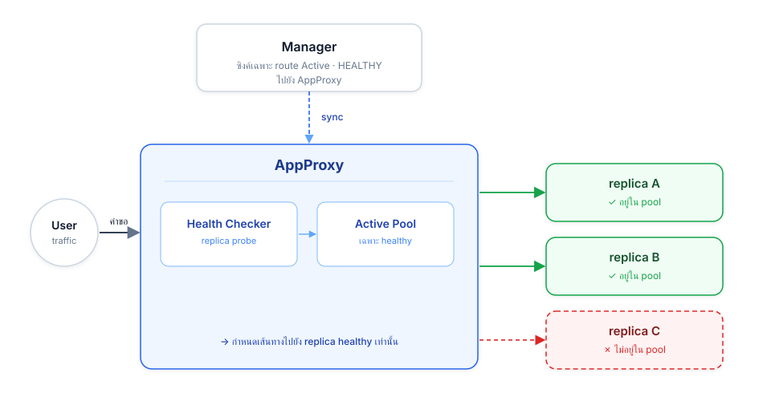
② Manager: การจัดการสถานะสุขภาพและ Eviction
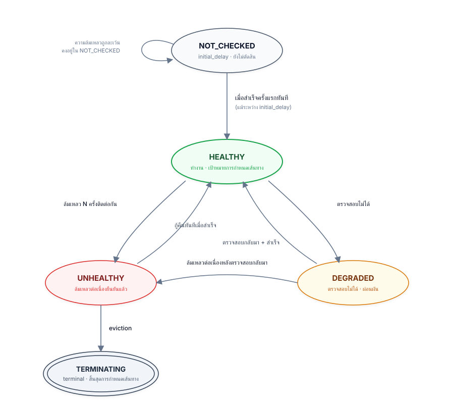
สถานะสุขภาพภายใน (ใช้สำหรับการเส้นทางการรับส่งข้อมูล) อาจไม่ถูก ซิงโครไนซ์ทันทีกับสถานะที่แสดงในส่วนติดต่อผู้ใช้
เวลาจนถึง UNHEALTHY:
การเริ่มต้นครั้งแรก:
initial_delay + interval × (max_retries + 1)ตัวอย่างกับค่าเริ่มต้น: 60 + 10 × 11 = 170 วินาที (ประมาณ 3 นาที)
ระหว่างการทำงาน (หลังจากสุขภาพดีแล้ว):
interval × (max_retries + 1)ตัวอย่างกับค่าเริ่มต้น: 10 × 11 = 110 วินาที (ประมาณ 2 นาที)
คำอธิบายการดำเนินการบริการที่รองรับใน Backend.AI การให้บริการโมเดล
write_file: การดำเนินการเพื่อสร้างไฟล์ด้วยชื่อไฟล์ที่กำหนดและเพิ่มเนื้อหา สิทธิ์การเข้าถึงเริ่มต้นคือ644arg/filename: ระบุชื่อไฟล์body: ระบุเนื้อหาที่จะเพิ่มลงในไฟล์mode: ระบุสิทธิ์การเข้าถึงไฟล์append: ตั้งค่าว่าจะเขียนทับหรือผนวกเนื้อหาลงในไฟล์เป็นTrueหรือFalse
write_tempfile: การดำเนินการเพื่อสร้างไฟล์ด้วยชื่อไฟล์ชั่วคราว (.py) และผนวกเนื้อหา หากไม่ได้ระบุค่าสำหรับ mode สิทธิ์การเข้าถึงเริ่มต้นจะเป็น644body: ระบุเนื้อหาที่จะเพิ่มลงในไฟล์mode: ระบุสิทธิ์การเข้าถึงไฟล์
run_command: ผลลัพธ์จากการดำเนินการคำสั่ง รวมถึงข้อผิดพลาดใดๆ จะถูกส่งกลับในรูปแบบต่อไปนี้ (out: ผลลัพธ์จากการดำเนินการคำสั่ง,err: ข้อความแสดงข้อผิดพลาดหากเกิดข้อผิดพลาดระหว่างการดำเนินการ)args/command: ระบุคำสั่งที่จะดำเนินการเป็นอาร์เรย์ (เช่น คำสั่งpython3 -m http.server 8080กลายเป็น ["python3", "-m", "http.server", "8080"])
mkdir: การดำเนินการเพื่อสร้างไดเรกทอรีตามเส้นทางที่ระบุargs/path: ระบุเส้นทางเพื่อสร้างไดเรกทอรี
log: การดำเนินการเพื่อพิมพ์ล็อกตามข้อความที่ระบุargs/message: ระบุข้อความที่จะแสดงในล็อกdebug: ตั้งค่าเป็นTrueหากอยู่ในโหมดดีบัก มิฉะนั้นตั้งค่าเป็นFalse
การอัปโหลดไฟล์กำหนดโมเดลไปยังโฟลเดอร์ประเภทโมเดล#
เพื่ออัปโหลดไฟล์กำหนดโมเดล (model-definition.yml) ไปยังโฟลเดอร์ประเภทโมเดล คุณต้องสร้างโฟลเดอร์เสมือน เมื่อสร้างโฟลเดอร์เสมือน ให้เลือกประเภท model แทนประเภท general เริ่มต้น โปรดดูส่วน การสร้างโฟลเดอร์จัดเก็บ ในหน้า Data สำหรับคำแนะนำเกี่ยวกับวิธีสร้างโฟลเดอร์
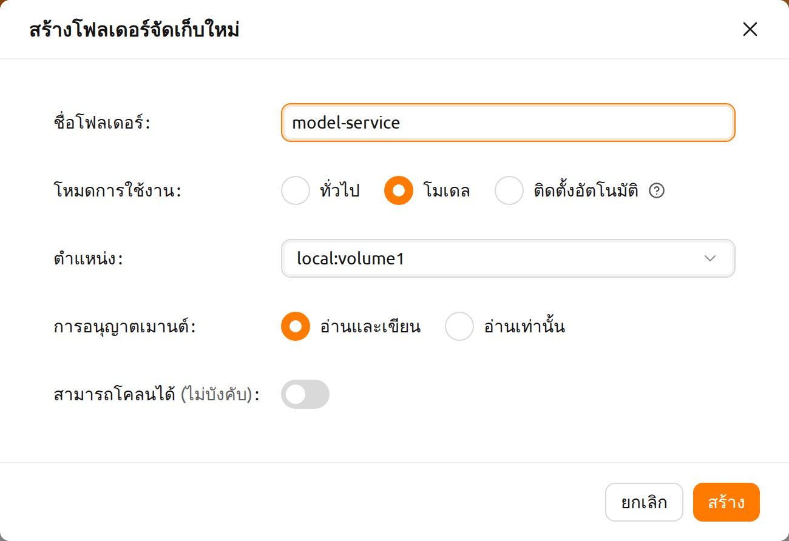
หลังจากสร้างโฟลเดอร์แล้ว ให้เลือกแท็บ 'MODELS' ในหน้า Data คลิกไอคอนโฟลเดอร์ประเภทโมเดลที่สร้างขึ้นล่าสุดเพื่อเปิดตัวสำรวจโฟลเดอร์ และอัปโหลดไฟล์กำหนดโมเดล สำหรับข้อมูลเพิ่มเติมเกี่ยวกับวิธีใช้ตัวสำรวจโฟลเดอร์ โปรดดูส่วน สำรวจโฟลเดอร์
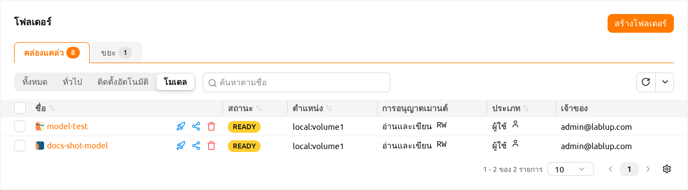
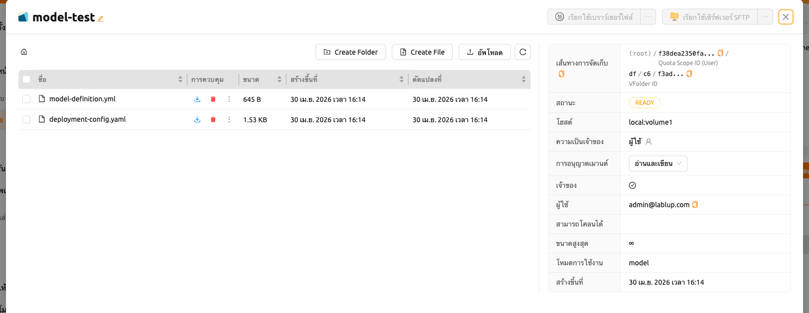
การกำหนดค่าล่วงหน้าสำหรับ Deployment (deployment-config.yaml)#
คุณสามารถวางไฟล์ deployment-config.yaml ในโฟลเดอร์โมเดลเพื่อกำหนดค่าล่วงหน้าสำหรับทรัพยากร สภาพแวดล้อม และการตั้งค่า runtime ที่ใช้เมื่อสร้าง deployment จากโมเดลนั้น เมื่อไฟล์มีอยู่ ค่าต่างๆ จะถูกใช้เป็น ค่าเริ่มต้น สิ่งใดก็ตามที่คุณตั้งค่าเมื่อสร้าง deployment (ในฟอร์ม Add Revision หรือคำขอ API) จะแทนที่ค่าเหล่านั้น
ไฟล์ service-definition.toml (รูปแบบ TOML) ในโฟลเดอร์เดียวกันยังคงถูกอ่านเป็นทางเลือกสำรอง แต่เป็น deprecated — ให้ใช้ deployment-config.yaml สำหรับโฟลเดอร์โมเดลของคุณ
deployment-config.yaml เป็น ตัวเลือก และไม่ขัดขวาง deployment คุณสามารถ deploy โมเดลได้ไม่ว่าไฟล์จะมีอยู่หรือไม่ — ไฟล์ที่หายไปหรือมีรูปแบบผิดจะถูกข้ามไป เมื่อใช้ร่วมกับ model-definition.yaml ที่เป็นตัวเลือก (ซึ่งอธิบายโมเดลและเซิร์ฟเวอร์ inference) จะช่วยให้ผู้ดูแลระบบสามารถส่งค่าเริ่มต้นที่สมเหตุสมผลไปพร้อมกับโมเดลได้
ค่าต่างๆ ถูกแก้ไขผ่าน ลำดับชั้นการแทนที่สามระดับ จากความสำคัญต่ำสุดถึงสูงสุด
- ค่าเริ่มต้นระดับราก — ใช้กับทุก runtime variant
- ส่วนของ runtime-variant (ตัวอย่างเช่น
vllm,sglang,tgi) — แทนที่เฉพาะช่องสำหรับ variant นั้นเท่านั้น - การป้อนข้อมูลเมื่อ deployment (ฟอร์ม Add Revision / คำขอ API) — แทนที่ทุกสิ่ง
environment:
image: "example.com/model-server:latest"
architecture: "x86_64"
resource_slots:
cpu: 4
mem: "16gb"
"cuda.shares": "0.5"
environ:
MODEL_NAME: "example-model-name"
resource_opts:
shmem: "8g"
vllm:
environment:
image: "vllm-optimized:0.4.0"
resource_slots:
cpu: 8
"cuda.device": 2ข้อมูลอ้างอิงช่อง
environment: อิมเมจคอนเทนเนอร์และสถาปัตยกรรมสำหรับบริการ inferenceimage: เส้นทางแบบเต็มของอิมเมจคอนเทนเนอร์ (เช่นexample.com/model-server:latest)architecture: สถาปัตยกรรม CPU ของอิมเมจ (เช่นx86_64,aarch64)
resource_slots: ทรัพยากรการคำนวณที่จัดสรรให้กับแต่ละ replicacpu: จำนวนแกน CPU (เช่น4,8)mem: จำนวนหน่วยความจำพร้อมคำนำหน้าหน่วย (เช่น"16gb")"cuda.shares"/"cuda.device": การจัดสรร GPU แบบเศษส่วนหรือทั้งหมด ใส่เครื่องหมายคำพูดสำหรับคีย์ที่มีจุด
environ: ตัวแปรสภาพแวดล้อมที่ส่งไปยังคอนเทนเนอร์บริการ inference ค่า root และ variant จะถูกรวมเข้าด้วยกันresource_opts: ตัวเลือกทรัพยากรเพิ่มเติมเช่นshmem(ขนาดหน่วยความจำที่แชร์)
สำหรับการ deploy vLLM ค่าเริ่มต้นระดับรากจะถูกรวมเข้ากับส่วน vllm (ช่องของ variant ชนะ) และการป้อนข้อมูลเมื่อ deployment ของคุณจะแทนที่ทั้งสองอย่าง เฉพาะช่องที่ระบุในส่วน variant เท่านั้นที่ถูกแทนที่ สิ่งอื่นๆ ทั้งหมดจะกลับไปยังระดับรากเสมอ
การปรับใช้อย่างรวดเร็ว#
การปรับใช้อย่างรวดเร็วแบบอิงพรีเซตช่วยให้คุณสร้างการปรับใช้ได้โดยไม่ต้องใช้ไฟล์กำหนดค่าแยกต่างหาก คุณสามารถเริ่มการปรับใช้อย่างรวดเร็วได้จากสองจุดเริ่มต้น:
- เรียกดูการ์ดโมเดลที่กำหนดค่าไว้ล่วงหน้าใน คลังโมเดล และคลิกปุ่ม
Deployเพื่อ deploy ทันทีโดยใช้พรีเซต - ในแท็บ โมเดล ของหน้า Data ให้คลิกปุ่ม
ปรับใช้เป็นบริการของโฟลเดอร์โมเดลเพื่อเปิดหน้าต่าง สร้าง Deployment ใหม่ด้วย Preset จากนั้นเลือกพรีเซตและกลุ่มทรัพยากรเพื่อ deploy โดยไม่ต้องตั้งค่าเพิ่มเติม
สำหรับขั้นตอนการ deploy โมเดลทั้งหมด ดูที่ส่วน คลังโมเดล
หน้าข้อมูลรายละเอียดการปรับใช้#
คลิกชื่อการปรับใช้ในรายการการปรับใช้เพื่อดูข้อมูลรายละเอียดเกี่ยวกับการปรับใช้
การแจ้งเตือนของการปรับใช้#
หน้าข้อมูลรายละเอียดการปรับใช้แสดงแบนเนอร์แจ้งเตือนตามบริบทที่ด้านบนของหน้า ขึ้นอยู่กับสถานะปัจจุบันของการปรับใช้
การปรับใช้พร้อมแล้ว: แสดงเมื่อการปรับใช้มีสถานะ
HEALTHYแบนเนอร์นี้มีปุ่ม ทดสอบในแชท เป็นทางลัดไปยังอินเทอร์เฟซ LLM Chat Test เพื่อให้คุณทดสอบโมเดลได้โดยไม่ต้องออกจากหน้าการปรับใช้แบบส่วนตัว — ใช้โทเค็นการเข้าถึงเพื่อเข้าถึงปลายทาง: แสดงเมื่อ เปิดสาธารณะ ถูกปิดใช้งาน, มีการออก URL ของ endpoint แล้ว และการปรับใช้ยังไม่มีโทเค็นการเข้าถึงเลย แบนเนอร์นี้มีปุ่ม เพิ่มโทเค็นการเข้าถึง ที่เปิดหน้าต่างสร้างโทเค็นการเข้าถึงได้ทันที และแบนเนอร์จะหายไปเมื่อคุณสร้างโทเค็นแรกแล้ว ดูรายละเอียดที่ การสร้างโทเค็น
ไม่มีการปรับใช้รุ่นแก้ไข — เพิ่มรุ่นแก้ไขเพื่อเปิดใช้งานบริการนี้: แสดงเมื่อการปรับใช้ยังไม่มี Revision ปัจจุบัน คลิก
เพิ่ม Revisionเพื่อสร้าง Revision แรกและเปิดใช้งานบริการกำลังเตรียมบริการของคุณ: แสดงเมื่อการปรับใช้กำลังถูกสร้างหรืออยู่ระหว่างการเปลี่ยนสถานะ บ่งบอกว่าบริการยังไม่พร้อมรับคำขอ
บริการโมเดลนี้อยู่ในโปรเจกต์อื่น: แสดงเมื่อการปรับใช้เป็นของโปรเจกต์อื่นที่ไม่ใช่โปรเจกต์ที่เลือกในปัจจุบัน ปุ่ม Edit จะถูกปิดใช้งานขณะที่การแจ้งเตือนนี้แสดงอยู่ คลิกปุ่ม สลับโปรเจกต์ ในการแจ้งเตือนเพื่อสลับไปยังโปรเจกต์ที่ถูกต้อง
ข้อมูลบริการ#
การ์ดข้อมูลบริการแสดงรายละเอียดต่อไปนี้:
- ชื่อการปรับใช้ และ สถานะ: ถัดจากแท็กสถานะจะมีปุ่มลิงก์ ประวัติการจัดตาราง เมื่อคลิกจะแสดงประวัติเหตุการณ์การจัดตารางของการปรับใช้นี้ในรูปแบบโมดอล
- ID การปรับใช้ และ เจ้าของเซสชัน
- การมองเห็น (Visibility): แสดงเป็นแท็ก สาธารณะ / ส่วนตัว โดย สาธารณะ หมายความว่าสามารถเข้าถึง endpoint ได้โดยไม่ต้องใช้ access token และ ส่วนตัว หมายความว่าผู้เรียกต้องส่ง access token ที่ถูกต้องมาด้วย
- จำนวนเรพลิกา
- Service Endpoint: URL สำหรับเข้าถึงการปรับใช้ สำหรับการปรับใช้ LLM จะมีปุ่ม
ทดสอบในแชทให้ใช้งาน - Resource Group: resource group ที่การปรับใช้ทำงานอยู่ ปัจจุบัน resource group เป็นส่วนหนึ่งของเมตาดาตาในระดับการปรับใช้ (ตั้งครั้งเดียวเมื่อสร้างการปรับใช้) ไม่ใช่ระดับ Revision อีกต่อไป
- ทรัพยากร: CPU, หน่วยความจำ, accelerator และ หน่วยความจำที่ใช้ร่วมกัน (SHM) ที่จัดสรร ค่าหน่วยความจำที่ใช้ร่วมกันมาจาก Revision ปัจจุบัน และแสดงขนาดของ
/dev/shmที่ inference server สามารถใช้ได้ ซึ่งสำคัญสำหรับ workload การอนุมานแบบ multi-GPU และ multi-process - Model Storage: โฟลเดอร์จัดเก็บโมเดลที่เมาต์และปลายทางเมาต์
- เมาต์เพิ่มเติม: โฟลเดอร์จัดเก็บเพิ่มเติมที่เมาต์
- ตัวแปรสภาพแวดล้อม: แสดงเป็นบล็อกโค้ด
- อิมเมจ: อิมเมจคอนเทนเนอร์ที่ใช้สำหรับบริการ
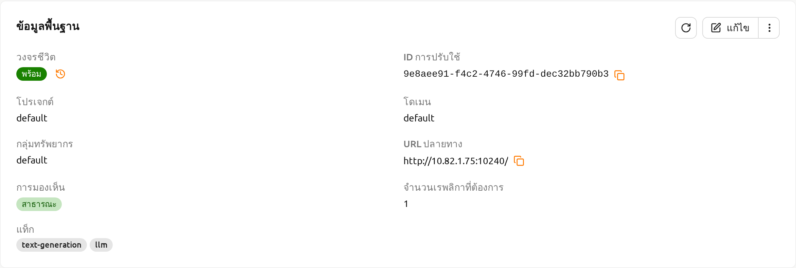
เมนูเพิ่มเติม (แก้ไขและลบ)#
ส่วนหัวของการ์ดข้อมูลบริการมีปุ่ม แก้ไข ควบคู่ไปกับเมนู เพิ่มเติม ปุ่ม แก้ไข จะเปิดหน้าต่าง แก้ไขการปรับใช้ ตามที่อธิบายไว้ใน หน้าต่างสร้างการปรับใช้ ปัจจุบันเมนูเพิ่มเติมมีการกระทำ ลบการปรับใช้
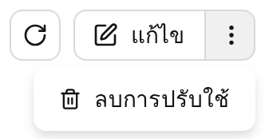
ประวัติการจัดตาราง#
คลิกปุ่มลิงก์ ประวัติการจัดตาราง ที่อยู่ถัดจากแท็กสถานะ เพื่อเปิดโมดอล ประวัติการจัดตารางของการปรับใช้ โมดอลนี้จะแสดงเหตุการณ์การจัดตารางที่บันทึกไว้สำหรับการปรับใช้นี้โดยเรียงจากใหม่ไปเก่า พร้อมแถบตัวกรองคุณสมบัติ (ID, เฟส, ผลลัพธ์, สถานะเดิม, สถานะใหม่, รหัสข้อผิดพลาด, ข้อความ, สร้างเมื่อ, อัปเดตเมื่อ) และปุ่มรีเฟรช
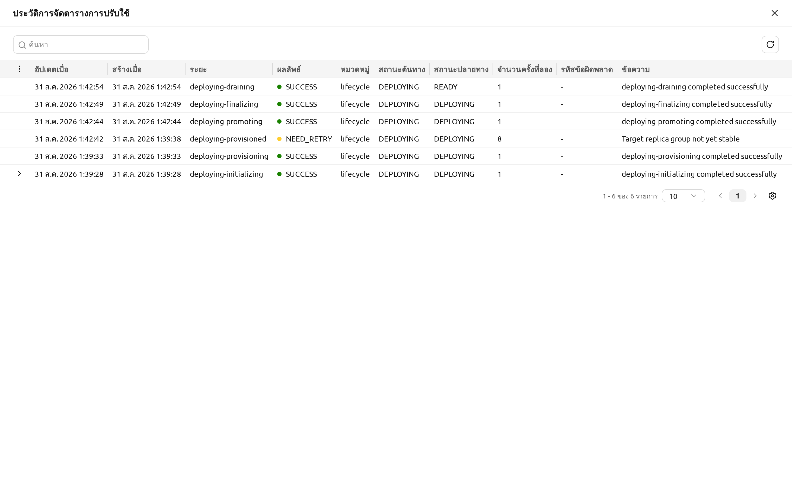
เหตุการณ์ที่มีการบันทึกขั้นตอนย่อยจะมีลูกศรขยายอยู่ทางซ้ายของแถว คลิกเพื่อแสดงตารางแบบอินไลน์ที่กระชับซึ่งแสดงขั้นตอนย่อยของเฟสนั้นแถวละหนึ่งขั้นตอน โดยมีคอลัมน์ดังนี้
- ขั้นตอน: ชื่อของขั้นตอนย่อย
- ผลลัพธ์: ผลลัพธ์ของขั้นตอนย่อย แสดงเป็นเครื่องหมายที่แยกด้วยสี
- ระยะเวลา: ระยะเวลาที่ขั้นตอนย่อยใช้ เช่น
120 msหรือ1.35 s - เวลา: เวลาที่ขั้นตอนย่อยเริ่มต้น แสดงละเอียดถึงระดับมิลลิวินาที
- รหัสข้อผิดพลาด: รหัสข้อผิดพลาดที่บันทึกไว้สำหรับขั้นตอนย่อย หรือ
-เมื่อไม่มี - ข้อความ: รายละเอียดหรือข้อความแสดงข้อผิดพลาดของขั้นตอนย่อย ย่อให้เหลือบรรทัดเดียว
โมดอล ประวัติการจัดตารางเวลาของ Replica ที่เปิดจากแท็บเรพลิกาก็ใช้ตารางชุดเดียวกัน ดูที่ เรพลิกา
แท็บ Revisions#
การ์ด Revisions บนหน้ารายละเอียดการปรับใช้มีสามแท็บ ได้แก่ Revision ปัจจุบัน, ประวัติ Revision และ บันทึกการตรวจสอบ ปุ่ม เพิ่ม Revision ที่ด้านบนของการ์ดใช้งานได้จากทุกแท็บ และเปิดหน้าต่างเพิ่ม Revision (ดู การเพิ่ม Revision)
แท็บ Revision ปัจจุบัน#
แท็บ Revision ปัจจุบัน แสดงการกำหนดค่าทั้งหมดของ Revision ที่ใช้งานอยู่และกำลังให้บริการทราฟฟิก
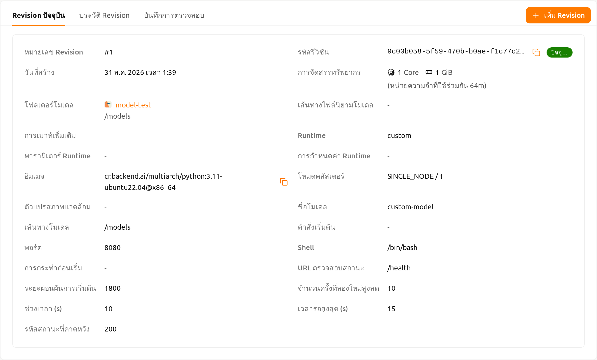
ฟิลด์ที่แสดงมีดังต่อไปนี้:
- หมายเลข Revision: หมายเลขลำดับที่กำหนดโดยอัตโนมัติ (เช่น #3)
- ID Revision: UUID ของ Revision นี้
- สร้างเมื่อ
- การจัดสรรทรัพยากร: การจัดสรรทรัพยากร (CPU, หน่วยความจำ, และตัวเร่งความเร็ว) สำหรับแต่ละเรพลิกา
- โฟลเดอร์โมเดล: โฟลเดอร์โมเดลที่ติดตั้งในแต่ละเรพลิกา แสดงเป็นลิงก์พร้อม ปลายทางการเมาท์สำหรับโฟลเดอร์โมเดล หาก Revision เมาต์โฟลเดอร์ย่อย จะแสดงบรรทัด
พาธย่อย: <ค่า>เพิ่มด้วย - เส้นทางไฟล์นิยามโมเดล: เส้นทางของไฟล์นิยามโมเดลภายในโฟลเดอร์โมเดล
- การเมาท์เพิ่มเติม: โฟลเดอร์จัดเก็บเพิ่มเติมที่ติดตั้งในแต่ละเรพลิกา
- Runtime: รันไทม์การให้บริการ (เช่น
vLLM,SGLang, หรือCustom) - พารามิเตอร์ Runtime (Runtime Parameters): ค่าพารามิเตอร์ preset ที่กำหนดค่าสำหรับ Revision นี้ (เช่น DType: float32, Quantization: awq) แสดงเฉพาะสำหรับ Revision
vLLMหรือSGLangที่มีการกำหนดค่าพารามิเตอร์ preset ไว้ แสดงเครื่องหมายขีดสำหรับ runtimeCustomหรือ Revision ที่ไม่มีค่า preset - การกำหนดค่า Runtime: สำหรับ runtime
vLLMหรือSGLangหากมีการตั้งค่าเพิ่มเติม จะแสดงในรูปแบบ JSON - อิมเมจ: คอนเทนเนอร์อิมเมจที่ใช้รันเรพลิกา
- โหมดคลัสเตอร์: รูปแบบการจัดกลุ่มของเซสชันการประมวลผลของแต่ละเรพลิกา (โหมด / ขนาด)
- ตัวแปรสภาพแวดล้อม: คู่คีย์-ค่าที่ถูกฉีดเข้าไปในคอนเทนเนอร์ แสดงเป็นบล็อก shell script
เมื่อไฟล์นิยามโมเดลมีการกำหนดโมเดล จะแสดงฟิลด์เพิ่มเติมดังนี้:
- ชื่อโมเดล, เส้นทางโมเดล, คำสั่งเริ่มต้น, พอร์ต, Shell, การกระทำก่อนเริ่ม, URL ตรวจสอบสุขภาพ, ระยะผ่อนผันการเริ่มต้น, จำนวนครั้งที่ลองใหม่สูงสุด, ช่วงเวลา (s), เวลารอสูงสุด (s), รหัสสถานะที่คาดหวัง
สถานะกำลังปรับใช้
ขณะที่ Revision อื่นกำลังถูกปรับใช้ แท็บ Revision ปัจจุบัน จะแสดงการแจ้งเตือน: "กำลังปรับใช้ Revision N" ปุ่ม ดู Revision ในการแจ้งเตือนจะเปิด drawer รายละเอียดของ Revision ที่กำลังถูกปรับใช้ แท็บจะรีเฟรชอัตโนมัติทุก 5 วินาทีจนกว่าการปรับใช้จะเสร็จสิ้น
สถานะว่างเปล่า
หากยังไม่มี Revision ที่ถูกปรับใช้ แท็บจะแสดง: "ไม่มีการปรับใช้รุ่นแก้ไข — เพิ่มรุ่นแก้ไขเพื่อเปิดใช้งานบริการนี้"
แท็บประวัติ Revision#
แท็บ ประวัติ Revision แสดงรายการ Revision ทั้งหมดที่เพิ่มในการปรับใช้ เรียงจากใหม่ไปเก่าตามค่าเริ่มต้น
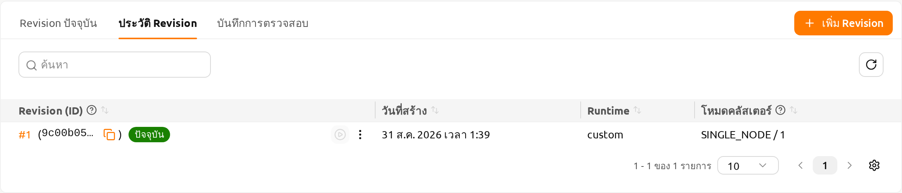
ตารางประกอบด้วยคอลัมน์ต่อไปนี้:
- Revision (ID): หมายเลข Revision และ UUID ของมัน หมายเลข Revision เป็นจำนวนเต็มที่เพิ่มขึ้น ตัวเลขที่น้อยกว่าคือ Revision ที่เก่ากว่า คลิกหมายเลข Revision เพื่อเปิด drawer รายละเอียด Revision
- สร้างเมื่อ
- Runtime: รันไทม์การให้บริการที่ใช้สำหรับ Revision นี้ (เช่น
vLLM,SGLang, หรือCustom) - โหมดคลัสเตอร์: รูปแบบการจัดกลุ่มในรูปแบบ "โหมด / ขนาด" วางเมาส์เหนือส่วนหัวคอลัมน์เพื่อดูคำอธิบาย
คอลัมน์ที่ซ่อนตามค่าเริ่มต้น แต่สามารถเปิดใช้งานได้จากการตั้งค่าคอลัมน์:
- ชื่อโมเดล, อิมเมจ, โฟลเดอร์โมเดล
การปรับใช้ Revision และการกระทำอื่น ๆ
แต่ละแถวมีปุ่ม ปรับใช้ และเมนูเพิ่มเติม
ปรับใช้: คลิกเพื่อเปิดกล่องโต้ตอบยืนยัน เมื่อยืนยัน Revision ที่เลือกจะกลายเป็น Revision ปัจจุบันและการปรับใช้จะเริ่มให้บริการทราฟฟิกด้วยการกำหนดค่าใหม่ Revision ก่อนหน้าจะถูกเก็บไว้ในประวัติ
สร้าง Revision ใหม่จากนี้: เลือกได้จากเมนูเพิ่มเติม จะเปิดหน้าต่างเพิ่ม Revision โดยกรอกการกำหนดค่าของ Revision นั้นไว้ล่วงหน้า เพื่อให้คุณแก้ไขและปรับใช้ใหม่ได้อย่างรวดเร็ว
แท็กสีเขียว ปัจจุบัน ทำเครื่องหมาย Revision ที่ใช้งานอยู่ในปัจจุบัน
แท็กสีเหลือง กำลังปรับใช้ (พร้อมตัวหมุนโหลด) ทำเครื่องหมาย Revision ที่กำลังถูกปรับใช้
ปุ่ม ปรับใช้ ถูกปิดใช้งานสำหรับ Revision ที่ใช้งานอยู่และ Revision ที่กำลังถูกปรับใช้ และยังใช้งานไม่ได้ขณะที่การปรับใช้หยุดอยู่ หรือขณะที่การปรับใช้หรือการย้อนกลับกำลังดำเนินการอยู่แล้ว
การคลิกหมายเลข Revision ในแถวใด ๆ จะเปิด drawer รายละเอียด Revision ที่แสดงการกำหนดค่าทั้งหมดของ Revision นั้น Drawer ยังมีปุ่ม ปรับใช้ และปุ่ม สร้าง Revision ใหม่จากนี้ ด้วย โดยปุ่ม ปรับใช้ จะถูกปิดใช้งานภายใต้เงื่อนไขเดียวกับในตาราง
ฟิลด์ พารามิเตอร์ Runtime ยังปรากฏใน drawer รายละเอียด Revision สำหรับ Revision vLLM และ SGLang ด้วย โดยแสดงค่าพารามิเตอร์ preset เดียวกันกับแท็บ Revision ปัจจุบัน
แท็บบันทึกการตรวจสอบ#
แท็บ บันทึกการตรวจสอบ (Audit Log) แสดงบันทึกตามลำดับเวลาของการดำเนินการทั้งหมดที่เกิดขึ้นกับการปรับใช้นี้ ใช้เพื่อติดตามว่าใครเปลี่ยนแปลงการปรับใช้และเมื่อใด
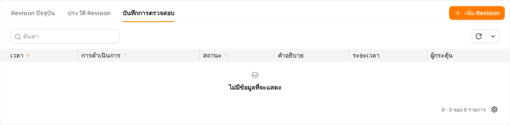
เรพลิกา#
แท็บเรพลิกาแสดง routing node ที่ประกอบกันเป็นการปรับใช้ รายการเรพลิกาจะถูกกรองด้วยตัวควบคุมแบบ radio กำลังทำงาน / สิ้นสุดแล้ว ที่ด้านบนของแท็บ
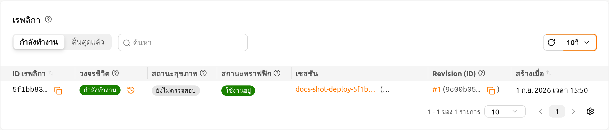
- กำลังทำงาน: แสดงเรพลิกาที่กำลังเตรียม กำลังทำงาน หรืออยู่ในสถานะใช้งานอื่น ๆ
- สิ้นสุดแล้ว: แสดงเรพลิกาที่สิ้นสุด lifecycle แล้ว
แต่ละแถวของเรพลิกามีฟิลด์สถานะที่เป็นอิสระต่อกันสามฟิลด์ ฟิลด์เหล่านี้แสดงมิติที่แตกต่างกันและควรอ่านร่วมกัน ตัวอย่างเช่น เรพลิกาอาจอยู่ในสถานะ Lifecycle กำลังทำงาน ในขณะที่สถานะสุขภาพยัง ยังไม่ตรวจสอบ อยู่
- สถานะ Lifecycle: ตำแหน่งของเรพลิกาใน lifecycle (เช่น กำลังจัดเตรียม, กำลังอุ่นเครื่อง, กำลังทำงาน, กำลังสิ้นสุด, สิ้นสุดแล้ว) ในระหว่าง กำลังอุ่นเครื่อง เรพลิกาจะอยู่ภายในระยะผ่อนผันการเริ่มต้น นั่นคือกำลังเริ่มต้นและรอการตรวจสอบสุขภาพครั้งแรกที่สำเร็จ ในช่วงนี้การตรวจสอบสุขภาพที่ล้มเหลวจะได้รับการยอมรับ เรพลิกาจะเปลี่ยนเป็น กำลังทำงาน เมื่อสำเร็จครั้งแรก และจะถูกสิ้นสุดหากไม่สำเร็จเลยจนกว่าช่วงเวลาจะสิ้นสุด หัวคอลัมน์จะแสดงเป็น วงจรชีวิต
- สถานะสุขภาพ: สถานะสุขภาพปัจจุบันของกระบวนการเรพลิกา (ปกติ, ผิดปกติ, เสื่อมสภาพ, ยังไม่ตรวจสอบ)
- ยังไม่ตรวจสอบ หมายความว่าการตรวจสอบสุขภาพครั้งแรกยังไม่เสร็จสมบูรณ์ โดยปกติเรพลิกายังอยู่ในช่วงผ่อนผัน กำลังอุ่นเครื่อง โดยตัวมันเองไม่ใช่ข้อผิดพลาด ให้ดู สถานะ Lifecycle เพื่อดูว่าเรพลิกาอยู่ในขั้นตอนใด
- สถานะ Traffic: เรพลิกากำลังให้บริการคำขออยู่หรือไม่ เรพลิกาสามารถถูกนำออกจาก traffic โดยไม่ขึ้นกับสถานะสุขภาพ (เช่น เมื่อถูกปิดใช้งานด้วยตนเอง) จึงแสดง traffic เป็นสถานะแยกต่างหากแทนที่จะรวมเข้ากับสถานะสุขภาพ
สถานะทั้งสามเป็นมิติที่เป็นอิสระต่อกัน ในระหว่างขั้นตอน Lifecycle กำลังอุ่นเครื่อง เรพลิกาจะอยู่ภายในระยะผ่อนผันการเริ่มต้น และ สถานะสุขภาพ มักจะแสดงเป็น ยังไม่ตรวจสอบ จนกว่าการตรวจสอบครั้งแรกจะเสร็จสมบูรณ์ ซึ่งไม่ได้บ่งชี้ถึงปัญหาด้วยตัวมันเอง
คลิกชื่อเซสชันในคอลัมน์ เซสชัน เพื่อเปิด drawer รายละเอียดเซสชัน คลิกหมายเลข Revision ในคอลัมน์ Revision (ID) เพื่อเปิด drawer รายละเอียด Revision
ถัดจากแท็กสถานะในคอลัมน์ วงจรชีวิต จะมีปุ่มไอคอนประวัติ เมื่อคลิกจะเปิดโมดอล ประวัติการจัดตารางเวลาของ Replica ของเรพลิกานั้น ซึ่งคุณสามารถกรองประวัติเหตุการณ์การจัดตารางของเรพลิกาได้ตามช่วงวันที่ สถานะ และอื่น ๆ
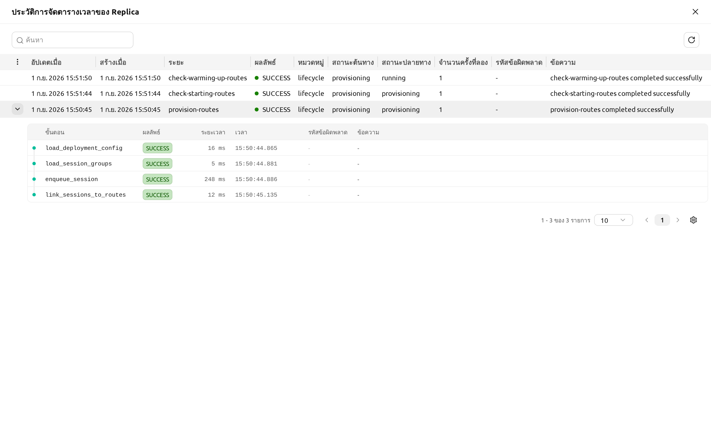
หากเรพลิกาพบข้อผิดพลาด คลิกที่ตัวบ่งชี้ข้อผิดพลาดในแถวเพื่อเปิดหน้าต่าง JSON viewer ที่แสดงข้อมูลข้อผิดพลาดดิบ ซึ่งมีประโยชน์ในการวินิจฉัยปัญหาของเรพลิกาแต่ละตัว
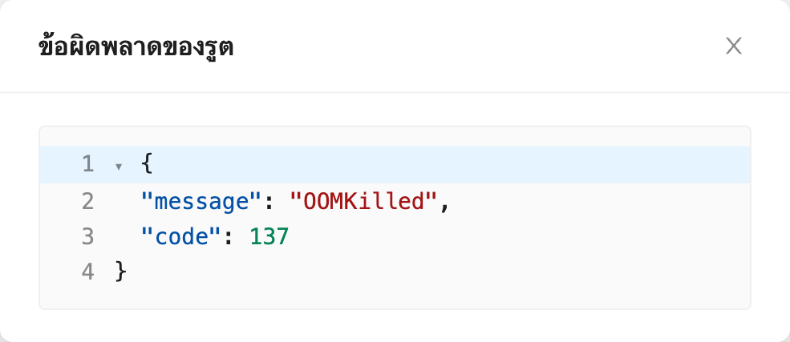
กฎการปรับขนาดอัตโนมัติ#
กฎการปรับขนาดอัตโนมัติ (Auto Scaling Rules) จะเพิ่มหรือลดจำนวนเรพลิกาของบริการโมเดลโดยอัตโนมัติตามเมตริกสด ช่วยประหยัดทรัพยากรในช่วงการใช้งานต่ำ และป้องกันความล่าช้าหรือความล้มเหลวของคำขอในช่วงการใช้งานสูง
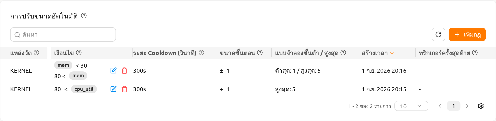
รายการกฎให้บริการดังนี้:
- แถบตัวกรองคุณสมบัติสำหรับกรองกฎตามช่วงวันเวลาของ สร้างเวลา (Created At) และ ทริกเกอร์ครั้งสุดท้าย (Last Triggered)
- การแบ่งหน้าที่ฝั่งเซิร์ฟเวอร์
- คอลัมน์ต่อไปนี้: แหล่งวัด (Metric Source), เงื่อนไข (Condition), ระยะ Cooldown (Cooldown Sec.), ขนาดขั้นตอน (Step Size), เรพลิกาขั้นต่ำ / สูงสุด (Min / Max Replicas), สร้างเวลา (Created At), ทริกเกอร์ครั้งสุดท้าย (Last Triggered) คอลัมน์ขนาดขั้นตอนจะแสดง
+,−, หรือ±โดยอัตโนมัติตามทิศทางที่ได้จากเกณฑ์ที่คุณตั้งไว้ - ไอคอนแก้ไขและลบต่อแถว แสดงถัดจากสรุปเงื่อนไขในแต่ละแถว
คลิกปุ่ม เพิ่มกฎ เพื่อเปิดตัวแก้ไข เพิ่มกฎการปรับขนาดอัตโนมัติ หากต้องการแก้ไขกฎที่มีอยู่ ให้คลิกไอคอนแก้ไขในแถวนั้น ตัวแก้ไข แก้ไขกฎการปรับขนาดอัตโนมัติ จะเปิดขึ้นโดยมีค่าของกฎที่กรอกไว้ล่วงหน้า ตัวแก้ไขประกอบด้วยฟิลด์ต่อไปนี้ตามลำดับ:
แหล่งวัด (Metric Source): เลือก
KernelหรือPrometheusชื่อเมตริก (Metric Name): สำหรับ
Kernelให้ใส่ชื่อเมตริก เมตริกทั่วไป เช่นcpu_util,mem,net_rxและnet_txเป็นคำแนะนำให้เติมอัตโนมัติ และคุณยังสามารถพิมพ์ชื่อที่กำหนดเองได้อย่างอิสระชื่อเมตริกแบบ Preset (Metric Name (Prometheus Preset)): แสดงเฉพาะเมื่อแหล่งวัดเป็น
Prometheusเลือก preset จากดรอปดาวน์ ชื่อเมตริก เทมเพลตคิวรี และ (เมื่อกำหนดไว้) ระยะ Cooldown (Cooldown Sec.) ของ preset จะถูกกรอกโดยอัตโนมัติเงื่อนไข (Condition): ตัวควบคุมแบบแบ่งส่วนสำหรับเลือกทิศทางการปรับขนาด มีสามตัวเลือก
- ย่อขนาด: ลดจำนวนเรพลิกาเมื่อเมตริกต่ำกว่าเกณฑ์ กำหนดเงื่อนไข
Metric < [เกณฑ์] - ขยายแนวนอน: เพิ่มจำนวนเรพลิกาเมื่อเมตริกสูงกว่าเกณฑ์ กำหนดเงื่อนไข
Metric > [เกณฑ์] - ขยายและย่อขนาด: ปรับขยายหรือลดขนาดโดยอัตโนมัติตามด้านที่เมตริกข้ามออกจากช่วงที่กำหนด กำหนดเงื่อนไข
Metric < Min ThresholdหรือMetric > Max Threshold
- ย่อขนาด: ลดจำนวนเรพลิกาเมื่อเมตริกต่ำกว่าเกณฑ์ กำหนดเงื่อนไข
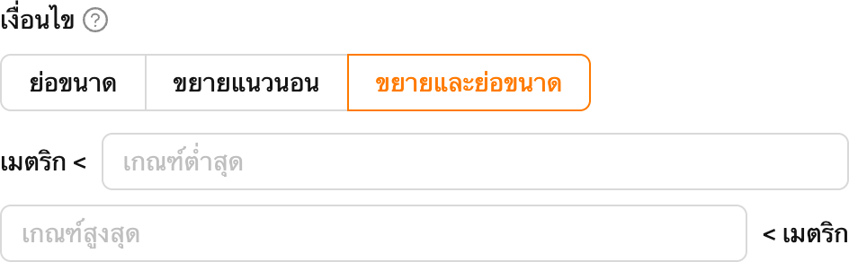
ขนาดขั้นตอน (Step Size): จำนวนเต็มบวกที่ระบุจำนวนเรพลิกาที่จะเพิ่มหรือลบต่อเหตุการณ์การปรับขนาด เครื่องหมาย
-,+, หรือ±จะแสดงโดยอัตโนมัติตามเงื่อนไขที่เลือก (ย่อขนาด / ขยายแนวนอน / ขยายและย่อขนาด)- ตั้งเฉพาะเกณฑ์ต่ำสุด:
[metric] < [minThreshold]จะทริกเกอร์ ย่อขนาด (เรพลิกาลดลงเมื่อเมตริกต่ำกว่าเกณฑ์) - ตั้งเฉพาะเกณฑ์สูงสุด:
[metric] > [maxThreshold]จะทริกเกอร์ ขยายแนวนอน (เรพลิกาเพิ่มขึ้นเมื่อเมตริกสูงกว่าเกณฑ์) - ตั้งทั้งสองเกณฑ์: หาก
[metric] < [minThreshold]เรพลิกาจะ ย่อขนาด; หาก[metric] > [maxThreshold]เรพลิกาจะ ขยายแนวนอน
- ตั้งเฉพาะเกณฑ์ต่ำสุด:
ระยะ Cooldown (Cooldown Sec.): เวลาเป็นวินาทีที่รอหลังจากเหตุการณ์การปรับขนาดก่อนการประเมินครั้งถัดไป
เรพลิกาขั้นต่ำ (Min Replicas) และเรพลิกาสูงสุด (Max Replicas): ขอบเขตล่างและบนที่การปรับขนาดอัตโนมัติบังคับใช้กับจำนวนเรพลิกา การปรับขนาดอัตโนมัติจะไม่ลดจำนวนเรพลิกาต่ำกว่าเรพลิกาขั้นต่ำ หรือเพิ่มให้มากกว่าเรพลิกาสูงสุด
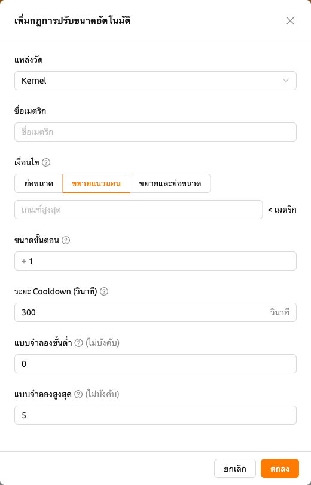
การสร้างโทเค็น#
เมื่อสถานะการปรับใช้เป็น HEALTHY ให้คลิกชื่อการปรับใช้ในรายการการปรับใช้เพื่อเปิดหน้าข้อมูลรายละเอียดการปรับใช้ คุณสามารถตรวจสอบ URL Service Endpoint ได้ในการ์ดข้อมูลบริการ หาก เปิดสาธารณะ เปิดใช้งาน ผู้ใช้ปลายทางสามารถเข้าถึงการปรับใช้ได้โดยไม่ต้องใช้โทเค็น หากปิดใช้งาน ให้สร้างโทเค็นตามคำอธิบายด้านล่าง
โทเค็นการเข้าถึงจัดการได้จากการ์ด โทเค็นการเข้าถึง ที่ด้านล่างของหน้าข้อมูลรายละเอียดการปรับใช้ วางเมาส์เหนือไอคอน ⓘ ถัดจากชื่อการ์ดเพื่อดูคำอธิบาย: "จัดการโทเค็นการเข้าถึงสำหรับการยืนยันตัวตนคำขอ API ไปยังเอนด์พอยต์ของการปรับใช้นี้"
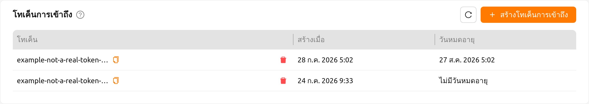
การสร้างโทเค็นการเข้าถึง#
- คลิกปุ่ม
สร้างโทเค็นการเข้าถึงในส่วนหัวของการ์ด หรือคลิก เพิ่มโทเค็นการเข้าถึง ในแบนเนอร์ การปรับใช้แบบส่วนตัว ที่ด้านบนของหน้า ซึ่งจะเปิดหน้าต่างเดียวกัน - เลือก วันหมดอายุ ของโทเค็น
7 วัน,30 วันหรือ90 วัน: โทเค็นจะหมดอายุตามจำนวนวันดังกล่าวนับจากตอนนี้ ค่าเริ่มต้นคือ7 วัน- วันหมดอายุที่กำหนดเอง: จะแสดงตัวเลือกวันและเวลาเพื่อกำหนดเวลาหมดอายุเอง เวลาที่เลือกต้องอยู่ในอนาคต
- ไม่มีวันหมดอายุ: ตั้งวันหมดอายุเป็นวันที่ในอนาคตไกล ๆ (
31 ธันวาคม 2099) ทำให้โทเค็นแทบไม่หมดอายุในทางปฏิบัติ หลังจากนี้ หน้าต่างโทเค็น รายการโทเค็น และตัวเลือกโทเค็นในหน้าแชท จะแสดงวันที่นี้แทนคำว่า "ไม่มีวันหมดอายุ"
- คลิก
สร้างโทเค็นการเข้าถึงเพื่อออกโทเค็น
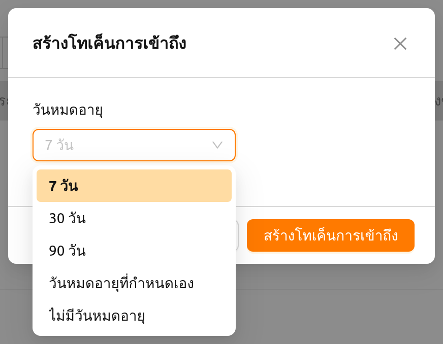
ปุ่ม
สร้างโทเค็นการเข้าถึงจะถูกปิดใช้งานจนกว่า manager จะออก endpoint ของเครือข่ายให้การปรับใช้นี้ ระหว่างที่ปิดใช้งาน คำแนะนำของปุ่มจะระบุว่า "ยังไม่ได้ออก endpoint ของเครือข่าย" ปุ่มนี้ยังถูกปิดใช้งานสำหรับการปรับใช้ที่คุณไม่ได้เป็นเจ้าของ ("เฉพาะเจ้าของการปรับใช้เท่านั้นที่สามารถจัดการโทเค็นการเข้าถึงได้") และการปรับใช้ที่กำลังหยุดหรือไม่ได้ใช้งานอีกต่อไป ("การปรับใช้กำลังหยุดหรือไม่ได้ใช้งานอีกต่อไป") สองเงื่อนไขหลังนี้ทำให้การลบโทเค็นถูกปิดใช้งานด้วยเช่นกัน
เมื่อออกโทเค็นแล้ว หน้าต่าง โทเค็น จะแสดงค่าโทเค็นเพียงครั้งเดียว พร้อมปุ่มคัดลอกและวันหมดอายุที่คุณเลือก คัดลอกโทเค็นจากหน้าต่างนี้ หรือคัดลอกจากตารางในภายหลังก็ได้
รายการโทเค็นการเข้าถึง#
การ์ดนี้แสดงโทเค็นการเข้าถึงทุกรายการที่ออกให้การปรับใช้นี้ โดยเรียงจากใหม่ไปเก่า
- โทเค็น: ค่าของโทเค็น แสดงแบบย่อพร้อมปุ่มคัดลอก ไอคอนลบในเซลล์เดียวกันใช้ลบโทเค็นได้
- สร้างเมื่อ: เวลาที่ออกโทเค็น
- วันหมดอายุ: เวลาที่โทเค็นจะหมดอายุ โทเค็นที่สร้างด้วย ไม่มีวันหมดอายุ จะแสดงเป็น
31 ธันวาคม 2099
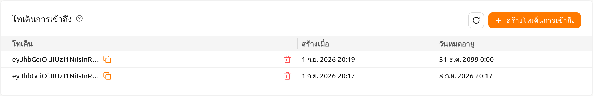
ส่งโทเค็นไปในส่วนหัวคำขอ Authorization
| Key | Value |
|---|---|
| Content-Type | application/json |
| Authorization | BackendAI <token> |
การลบโทเค็นการเข้าถึง#
คลิกไอคอนลบในแถวของโทเค็น หน้าต่าง ลบโทเค็นการเข้าถึง จะขอให้คุณพิมพ์ ลบ เพื่อยืนยัน และปุ่มตกลงจะยังถูกปิดใช้งานจนกว่าข้อความที่พิมพ์จะตรงกัน
การลบโทเค็นการเข้าถึง ไม่สามารถย้อนกลับได้ และมีผลทันที ไคลเอนต์ที่ยังส่งโทเค็นนั้นอยู่จะเริ่มได้รับข้อผิดพลาดในการยืนยันตัวตน
การยุติการปรับใช้#
หากไม่จำเป็นต้องใช้การปรับใช้แล้ว แนะนำให้ยุติการปรับใช้นั้น หากต้องการยุติการปรับใช้ ให้เปิดเมนู เพิ่มเติม บนการ์ดข้อมูลบริการ และเลือก ลบการปรับใช้ หน้าต่างยืนยันแบบพิมพ์จะปรากฏขึ้น — พิมพ์ชื่อการปรับใช้เพื่อเปิดใช้งานปุ่ม ลบถาวร การปรับใช้ที่ยุติแล้วจะปรากฏในมุมมองตัวกรอง ถูกทำลาย
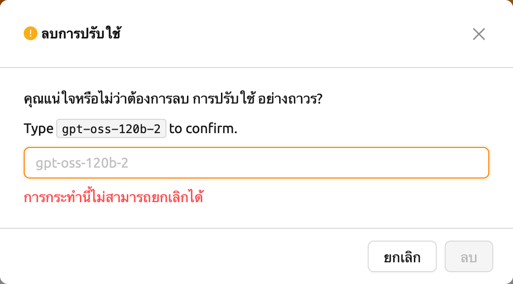
การเข้าถึงการปรับใช้ของคุณ#
การส่งคำขอ API#
หากต้องการให้ผู้ใช้ปลายทางเรียกใช้การปรับใช้ของคุณ ให้แบ่งปัน URL การปรับใช้กับพวกเขา หาก เปิดสาธารณะ เปิดใช้งาน คุณสามารถแบ่งปัน URL Service Endpoint จากหน้าข้อมูลรายละเอียดการปรับใช้ได้โดยตรง สำหรับการปรับใช้แบบส่วนตัว ให้แบ่งปัน URL พร้อมกับ access token ด้วย
นี่คือคำสั่ง curl ง่ายๆ เพื่อตรวจสอบว่าการส่งคำขอไปยัง URL การปรับใช้ทำงานอย่างถูกต้องหรือไม่:
export API_TOKEN="<token>"
export MODEL_SERVICE_ENDPOINT="<model-service-endpoint>"
curl -H "Content-Type: application/json" -X GET -H "Authorization: BackendAI $API_TOKEN" "$MODEL_SERVICE_ENDPOINT"โดยค่าเริ่มต้น ผู้ใช้ปลายทางต้องอยู่ในเครือข่ายที่สามารถเข้าถึง endpoint ได้ หากบริการถูกสร้างในเครือข่ายปิด เฉพาะผู้ใช้ปลายทาง ที่มีการเข้าถึงภายในเครือข่ายปิดนั้นเท่านั้นที่สามารถเข้าถึงบริการได้
การทดสอบ LLM Chat#
หากคุณสร้างบริการ Large Language Model (LLM) คุณสามารถทดสอบ LLM แบบเรียลไทม์
เมื่อการปรับใช้พร้อมแล้ว ปุ่ม ทดสอบในแชท จะปรากฏในแบนเนอร์ การปรับใช้พร้อมแล้ว ที่ด้านบนของหน้าข้อมูลรายละเอียดการปรับใช้ คลิกปุ่มดังกล่าวเพื่อเริ่มการทดสอบ
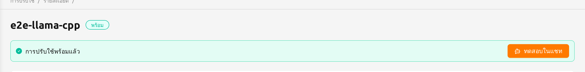
คุณจะถูกเปลี่ยนเส้นทางไปยังหน้า Chat ซึ่งโมเดลที่คุณสร้างจะถูกเลือกโดยอัตโนมัติ โดยใช้อินเทอร์เฟซแชทที่ให้บริการในหน้า Chat คุณสามารถทดสอบโมเดล LLM สำหรับข้อมูลเพิ่มเติมเกี่ยวกับฟีเจอร์แชท โปรดดู หน้าแชท
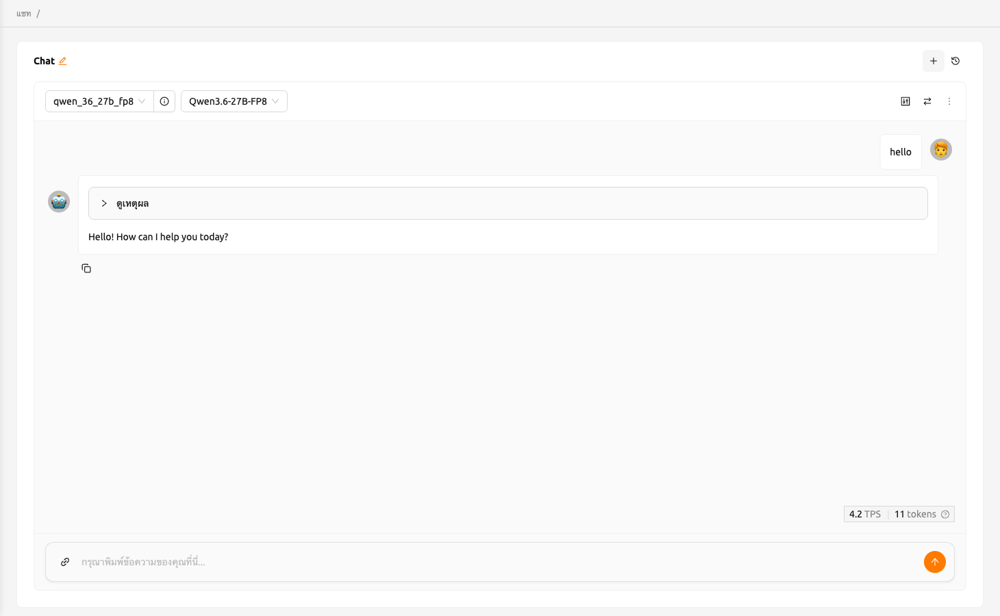
การเลือกโทเค็นในหน้า Chat#
เมื่อหน้า Chat เชื่อมต่อกับการปรับใช้ของ Backend.AI ช่องโทเค็นจะไม่ใช่ช่องข้อความธรรมดา แต่เป็นตัวเลือกที่แสดงรายการโทเค็นการเข้าถึงของการปรับใช้นั้น
- แต่ละตัวเลือกจะแสดง อักขระ 6 ตัวสุดท้าย ของโทเค็นในรูปแบบโค้ด พร้อมวันหมดอายุ (เช่น
~ 26 ส.ค. 2026หรือ~ 31 ธ.ค. 2099สำหรับโทเค็นที่สร้างด้วย ไม่มีวันหมดอายุ) เนื่องจากโทเค็นทุกตัวขึ้นต้นด้วยส่วนหัว JWT เหมือนกัน ส่วนท้ายจึงเป็นสิ่งที่ใช้แยกความแตกต่างได้จริง วางเมาส์เหนือตัวเลือกเพื่อดูเวลาที่ออกโทเค็น → เวลาหมดอายุแบบเต็ม - โทเค็นที่หมดอายุแล้วจะไม่ถูกแสดง รายการจะมีเฉพาะโทเค็นที่ยังใช้ได้เท่านั้น
- เมื่อช่องยังว่าง ระบบจะเลือก โทเค็นที่ใช้ได้ซึ่งสร้างล่าสุด ให้โดยอัตโนมัติ หากคุณล้างการเลือกเอง ระบบจะไม่เลือกให้ใหม่อีก
- ไอคอนรูปเฟืองถัดจากช่อง (การตั้งค่าโทเค็นการเข้าถึง) จะพาไปยังส่วนโทเค็นการเข้าถึงของการปรับใช้นั้น เพื่อให้คุณออกโทเค็นใหม่ได้โดยไม่เสียบริบทเดิม เมื่อกลับมา รายการจะถูกโหลดใหม่ คุณจึงเลือกโทเค็นที่เพิ่งสร้างได้ทันที
หากการปรับใช้ไม่มีโทเค็นที่ใช้ได้เลย ตัวเลือกจะว่างเปล่า ให้สร้างโทเค็นก่อนตามที่อธิบายไว้ใน การสร้างโทเค็น
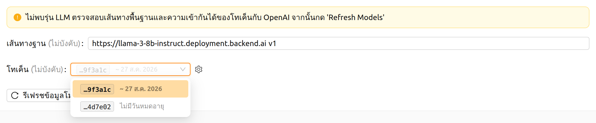
หากคุณพบปัญหาในการเชื่อมต่อกับ API หน้าแชทจะแสดงตัวเลือกที่ให้คุณกำหนดค่าการตั้งค่าโมเดลด้วยตนเอง ในการใช้โมเดล คุณจะต้องมีข้อมูลต่อไปนี้:
- เส้นทางฐาน (ไม่บังคับ): Base URL ของเซิร์ฟเวอร์ที่โมเดลตั้งอยู่ ตรวจสอบให้แน่ใจว่าได้รวมข้อมูลเวอร์ชัน เช่น เมื่อใช้ OpenAI API คุณควรใส่ https://api.openai.com/v1
- โทเค็น (ไม่บังคับ): คีย์การรับรองความถูกต้องเพื่อเข้าถึงบริการโมเดล โทเค็นสามารถ สร้างได้จากบริการต่างๆ ไม่ใช่แค่ Backend.AI เท่านั้น รูปแบบและกระบวนการสร้าง อาจแตกต่างกันไปขึ้นอยู่กับบริการ ควรอ้างถึงคู่มือของบริการเฉพาะสำหรับรายละเอียด เช่น เมื่อใช้บริการที่สร้างโดย Backend.AI โปรดดู การสร้างโทเค็น สำหรับคำแนะนำเกี่ยวกับวิธีสร้างโทเค็น
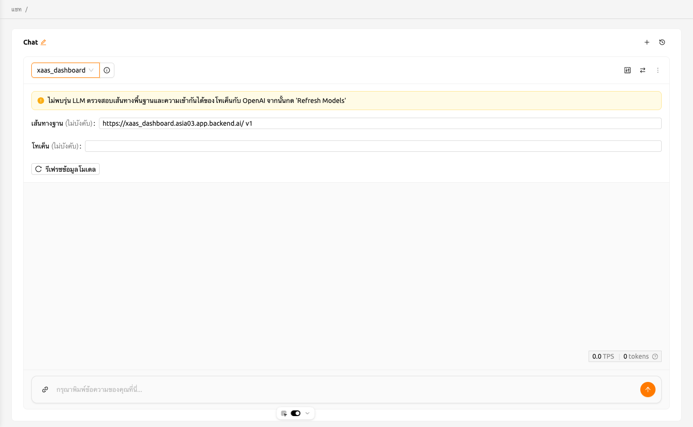
คลังโมเดล#
คลังโมเดล (Model Store) ให้บริการแกลเลอรีแบบการ์ดของโมเดลที่กำหนดค่าไว้ล่วงหน้าซึ่งคุณสามารถเรียกดู ค้นหา และ deploy ได้ คุณสามารถเข้าถึงคลังโมเดลได้จากเมนูด้านข้าง
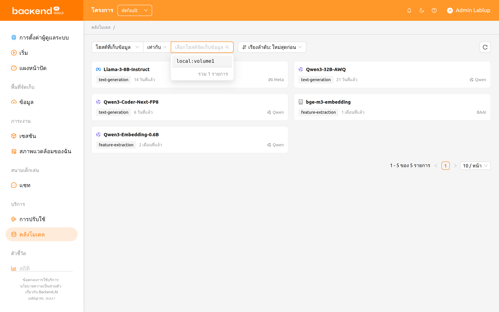
การเรียกดูและค้นหาโมเดล#
ส่วนบนของหน้าใช้รูปแบบตัวกรองและเรียงลำดับ:
แถบตัวกรองคุณสมบัติ: เพิ่มเงื่อนไขหนึ่งข้อขึ้นไปเพื่อจำกัดรายการการ์ด มีคุณสมบัติให้ใช้สองรายการ
- ชื่อโมเดล: ค้นหาการ์ดโมเดลตามชื่อ
- โฮสต์ที่เก็บข้อมูล: กรองการ์ดตาม storage host ที่โฟลเดอร์โมเดลตั้งอยู่ แทนที่จะพิมพ์ชื่อโฮสต์ ให้เลือกจากดรอปดาวน์ของ storage host ที่ลงทะเบียนไว้บนเซิร์ฟเวอร์ ค่าที่เลือกจะถูกเพิ่มเป็นเงื่อนไขตัวกรองทันที ใช้ตัวดำเนินการ
equalsเพื่อแสดงเฉพาะโฮสต์นั้น หรือnot equalsเพื่อยกเว้นโฮสต์นั้น
เรียงลำดับ (Sort): เลือกวิธีการเรียงลำดับผลลัพธ์ ตัวเลือกที่ใช้งานได้คือ
ชื่อ (A→Z),ชื่อ (Z→A),เก่าสุดก่อนและใหม่สุดก่อนรีเฟรช (Refresh): คลิกปุ่มรีเฟรชเพื่อโหลดรายการการ์ดใหม่
เนื่องจากเลือกโฮสต์จากรายการแทนการพิมพ์เอง การพิมพ์ชื่อโฮสต์ผิดจึงไม่ทำให้ได้ผลลัพธ์ว่างเปล่าโดยไม่รู้ตัว เงื่อนไขจะถูกรวมกันด้วย
ANDคุณจึงใช้เงื่อนไขชื่อร่วมกับเงื่อนไข storage host ได้
รายการโมเดลจะถูกกำหนดขอบเขตโดยอัตโนมัติให้เฉพาะโปรเจกต์ MODEL_STORE ของโดเมนปัจจุบัน โดยไม่มีตัวกรองโดเมนแยกต่างหาก การ์ดทั้งหมดที่มองเห็นได้ในหน้านี้เป็นของโดเมนของคุณอยู่แล้ว
การ์ดแต่ละใบจะแสดงไอคอนแบรนด์ของโมเดล ชื่อเรื่อง (หรือชื่อเมื่อไม่มีการตั้งชื่อเรื่อง) แท็กงาน เวลาสร้างแบบสัมพัทธ์ และผู้เขียน (Author) พร้อมไอคอน การ์ดที่ ไม่มี preset ที่เข้ากันได้ สำหรับโปรเจกต์ปัจจุบันจะถูกแสดงที่ความโปร่งใส 50 % คุณสามารถเปิดการ์ดดังกล่าวเพื่อดูรายละเอียดได้ แต่ปุ่ม Deploy จะถูกปิดใช้งานและมีการแจ้งเตือนข้อผิดพลาด ไม่มี preset ที่เข้ากันได้ ไม่สามารถ deploy โมเดลนี้ได้ แสดงใน Drawer
หากไม่ได้ตั้งค่าโปรเจกต์ MODEL_STORE บนเซิร์ฟเวอร์ หน้าจะแสดงข้อความ ไม่พบโปรเจกต์ Model Store พร้อมคำแนะนำให้ติดต่อผู้ดูแลระบบ หากไม่มีการ์ดโมเดลใดที่ตรงกับตัวกรองของคุณ หน้าจะแสดง ไม่พบโมเดล
รายการจะถูกแบ่งหน้าที่ด้านล่าง คุณสามารถเปลี่ยนขนาดหน้าระหว่าง 10, 20 และ 50 รายการได้
รายละเอียดการ์ดโมเดล#
คลิกการ์ดเพื่อเปิด Drawer การ์ดโมเดลทางด้านขวาของหน้า Drawer จะแสดงชื่อเรื่องและคำอธิบายโมเดลที่ด้านบน ตามด้วยแท็กงาน หมวดหมู่ ป้ายกำกับ และใบอนุญาต จากนั้นจะเป็นรายการรายละเอียดที่มีรายการต่อไปนี้:
- ผู้เขียน (Author)
- สถาปัตยกรรม (Architecture)
- เฟรมเวิร์ก (Framework) (เฟรมเวิร์กแต่ละตัวจะแสดงพร้อมไอคอน)
- เวอร์ชัน (Version)
- สร้างเมื่อ (Created) และแก้ไขล่าสุด (Last Modified) เวลาประทับ
- โฟลเดอร์โมเดล (Model Folder): ลิงก์ที่คลิกได้ซึ่งเปิดตัวสำรวจโฟลเดอร์สำหรับโฟลเดอร์จัดเก็บโมเดล
- ทรัพยากรขั้นต่ำ (Min Resource): ข้อกำหนดทรัพยากรขั้นต่ำ (CPU, หน่วยความจำ, GPU)
หากการ์ดโมเดลมี README จะถูกเรนเดอร์เป็นการ์ด README.md ที่ด้านล่างของ Drawer

การ Deploy โมเดล#
คลิกปุ่ม Deploy ในส่วนหัวของ Drawer เพื่อ deploy โมเดลเป็นบริการ ขั้นตอนการ deploy ทำงานได้ด้วยหนึ่งในสองรูปแบบ:
Deploy อัตโนมัติ: หากโมเดลมี preset ที่ใช้งานได้เพียงหนึ่งรายการ และโปรเจกต์ปัจจุบันมีกลุ่มทรัพยากรที่เข้าถึงได้เพียงหนึ่งรายการ การ deploy จะถูกสร้างขึ้นอย่างเงียบ ๆ โดยไม่มีโมดอลแสดงขึ้น หลังจาก endpoint พร้อมให้สืบค้นแล้ว คุณจะถูกนำไปยังหน้าข้อมูลรายละเอียดการปรับใช้
โมดอล Deploy Model: มิฉะนั้น โมดอล Deploy Model จะเปิดขึ้นพร้อมด้วยฟิลด์ที่จำเป็นต่อไปนี้
- Preset: ดรอปดาวน์ที่จัดกลุ่มของ preset ทรัพยากรที่ใช้งานได้ เมื่อ preset ครอบคลุมตัวแปร runtime หลายตัว ตัวเลือกจะถูกจัดกลุ่มตามชื่อตัวแปร runtime มิฉะนั้น ตัวเลือกจะถูกแสดงเป็นรายการแบบแบน
- Resource Group: กลุ่มทรัพยากรที่บริการจะทำงาน
คลิกปุ่ม
Deployในโมดอลเพื่อเริ่มการ deploy จะมีการแสดง toast แสดงความสำเร็จที่ยืนยันว่าโมเดลได้รับการ deploy แล้ว และคุณจะถูกนำไปยังหน้าข้อมูลรายละเอียดการปรับใช้
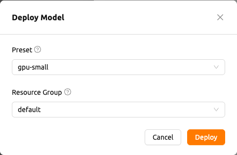
หากโมเดลที่เลือกไม่มี preset ที่เข้ากันได้สำหรับโปรเจกต์ปัจจุบัน ปุ่ม Deploy ใน Drawer
จะถูกปิดใช้งาน และการ deploy จะถูกปิดกั้นจนกว่าจะมี preset ที่เข้ากันได้